Mixed-Effects Regression
UQ SLC Digital Team
2020-08-31

1 Introduction
This tutorial introduces mixed-effects regression modelling using R. The entire code for the sections below can be downloaded here.
Mixed-effects models are rapidly increasing in use in data analysis because they allow us to incorporate hierarchical or nested data structures. Mixed-effects models are, of course, an extension of fixed-effects regression models and also multivariate and come in different types.
In contrast to fixed-effects regression models, mixed-effects models are not simple additive models because they are based on complex matrix multiplications where predicted values represent the product of the random effects multiplied by the intercept values plus the estimates of the fixed effects component in the model.
In the following, we will go over the most relevant and frequently used types of mixed-effect regression models, mixed-effects linear regression models and mixed-effects binomial logistic regression models.
The major difference between these types of models is that they take different types of dependent variables. While linear models take numeric dependent variables, logistic models take nominal variables.
Preparation and session set up
As all calculations and visualizations in this tutorial rely on R, it is necessary to install R and RStudio. If these programs (or, in the case of R, environments) are not already installed on your machine, please search for them in your favorite search engine and add the term download. Open any of the first few links and follow the installation instructions (they are easy to follow, do not require any specifications, and are pretty much self-explanatory).
In addition, certain packages need to be installed so that the scripts shown below are executed without errors. Before turning to the code below, please install the packages by running the code below this paragraph. If you have already installed the packages mentioned below, then you can skip ahead ignore this section. To install the necessary packages, simply run the following code - it may take some time (between 1 and 5 minutes to install all of the packages so you do not need to worry if it takes some time).
# clean current workspace
rm(list=ls(all=T))
# set options
options(stringsAsFactors = F) # no automatic data transformation
options("scipen" = 100, "digits" = 4) # supress math annotation
# install libraries
install.packages(c("car", "dplyr", "ggplot2", "Hmisc", "knitr", "lme4", "rms", "sjPlot"))Once you have installed R, R-Studio, and have also initiated the session by executing the code shown above, you are good to go.
2 Linear Mixed-Effects Regression
The following focuses on an extension of ordinary multiple linear regressions: mixed-effects regression linear regression. Mixed-effects models have the following advantages over simpler statistical tests:
Mixed-effects models are multivariate, i.e. they test the effect of several predictors simultaneously while controlling for the effect of all other predictors.
Mixed models allow to statistically incorporate within-speaker variability and are thus fit to model hierarchical or nested data structures. This applies if several observations are produced by an individual speaker, for instance.
Mixed-models provide a wealth of diagnostic statistics which enables us to control e.g. multicollinearity, i.e. correlations between predictors, and to test whether conditions or requirements are violated (e.g. homogeneity of variance, etc.).
Major disadvantages of mixed-effects regression modelling are that they are prone to producing high \(\beta\)-errors (see Johnson 2009) and that they require rather large data sets.
2.1 Introduction
So far, the regression models that we have used only had fixed-effects. Having only fixed-effects means that all data points are treated as if they are completely independent and thus on the same hierarchical level. However, it is very common, that the data is nested in the sense that data points are not independent because they are, for instance produced by the same speaker or are grouped by some other characteristic. In such cases, the data is considered hierarchical and statistical models should incorporate such structural features of the data they work upon. With respect to regression modelling, hierarchical structures are incorporated by what is called random effects. When models only have a fixed-effects structure, then they make use of only a single intercept and/or slope (as in the left panel in the figure below), while mixed effects models have intercepts for each level of a random effect. If the random effect structure represents speakers then this would mean that a mixed-model would have a separate intercept and/or slope for each speaker.
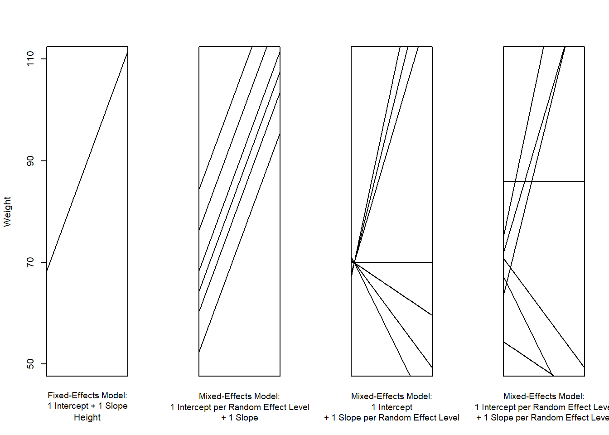
2.2 Random Effects
Random Effects can have two parameters: the intercept (the point where the regression line crosses the y-axis) and the slope (the acclivity of the regression line). In contrast to fixed-effects models, that have only 1 intercept and one slope (left panel of the Figure above), mixed-effects models can therefore have various random intercepts (centre left panel ) or various random slopes (centre right panel ), or both, various random intercepts and various random slopes (right panel in the Figure).
What features do distinguish random and fixed effects?
Random effects represent a higher level variable under which data points are grouped.
Random effects represent a sample of an infinite number of possible levels. For instance, speakers represent a potentially infinite pool of elements from which a many different samples can be drawn. Thus, random effects represent a random sample sample. Fixed effects, on the other hand, typically do not represent a random sample but a fixed set of variable levels (e.g. Age groups, or parts-of-speech).
Random effects typically represent many different levels while fixed effects typically have only a few. Zuur, Hilbe, and Ieno (2013) propose that a variable may be used as a fixed effect if it has less than 5 levels while it should be treated as a random effect if it has more than 10 levels. Variables with 5 to 10 levels can be used as both. However, this is a rule of thumb and ignores the theoretical reasons (random sample and nestedness) for considering something as a random effect and it also is at odds with the way that repeated measures are models (namely as mixed effects) alhough they typically only have very few levels.
In the following, we will only focus on models with random intercepts because this is the by far more common method and because including both random intercepts and random slopes requires huge amounts of data. Consider the Figure below to understand what is meant by “random intercepts”.

The left panel merely shows the data while the centre panel includes the regression line for a regression that estimates Weight based on Height. The right panel shows the regression line and, in addition, random intercepts each of the three groups.
After adding random intercepts, predictors (or fixed effects) are added to the model (just like with multiple regression). So mixed-effects are called mixed-effects because they contain both random and fixed effects.
In terms of general procedure, random effects are added first, and only after we have ascertained that including random effects is warranted, we test whether including fixed-effects is warranted (Field, Miles, and Field 2012). We test whether including random effects is warranted by comparing a model, that bases its estimates of the depended variable solely on the base intercept (the mean), with a model, that bases its estimates of the dependent variable solely on the intercepts of the random effect. If the random-effect model explains significantly more variance than the simple model without random effect structure, then we continue with the mixed-effects model. In other words, including random effects is justified if they reduce residual deviance.
2.3 Example: Preposition Use across Time by Genre
To explore how to implement a mixed-effects model in R we revisit the preposition data that contains relative frequencies of prepositions in English texts written between 1150 and 1913. As a first step, and to prepare our analysis, we load necessary R packages, specify options, and load as well as provide an overview of the data.
# activate packages
library(tidyverse)
library(knitr)
# supress scientific notation
options("scipen" = 100, "digits" = 4)
# do not convert strings into factors
options(stringsAsFactors = F)
# read in data
lmmdata <- read.delim("https://slcladal.github.io/data/lmmdata.txt", header = TRUE) %>%
# convert date into a numeric variable
dplyr::mutate(Date = as.numeric(Date))
# inspect updated data set
head(lmmdata); nrow(lmmdata) ## Date Genre Text Prepositions Region
## 1 1736 Science albin 166.0 North
## 2 1711 Education anon 139.9 North
## 3 1808 PrivateLetter austen 130.8 North
## 4 1878 Education bain 151.3 North
## 5 1743 Education barclay 145.7 North
## 6 1908 Education benson 120.8 North## [1] 537The data set contains the date when the text was written (Date), the genre of the text (Genre), the name of the text (Text), the relative frequency of prepositions in the text (Prepositions), and the region in which the text was written (Region). We now plot the data to get a first impression of its structure.
library(gridExtra)
p1 <- ggplot(lmmdata, aes(x = Date, y = Prepositions)) +
geom_point() +
geom_smooth(method = "lm", se = F, color = "red", linetype = "dashed") +
theme_bw() +
labs(y = "Frequency\n(Prepositions)")
p2 <- ggplot(lmmdata, aes(x = reorder(Genre, -Prepositions), y = Prepositions)) +
geom_boxplot() +
theme_bw() +
theme(axis.text.x = element_text(angle=90)) +
labs(x = "Genre", y = "Frequency\n(Prepositions)")
p3 <- ggplot(lmmdata, aes(Prepositions)) +
geom_histogram() +
theme_bw() +
labs(y = "Count", x = "Frequency (Prepositions)")
grid.arrange(grobs = list(p1, p2, p3), widths = c(1, 1), layout_matrix = rbind(c(1, 1), c(2, 3)))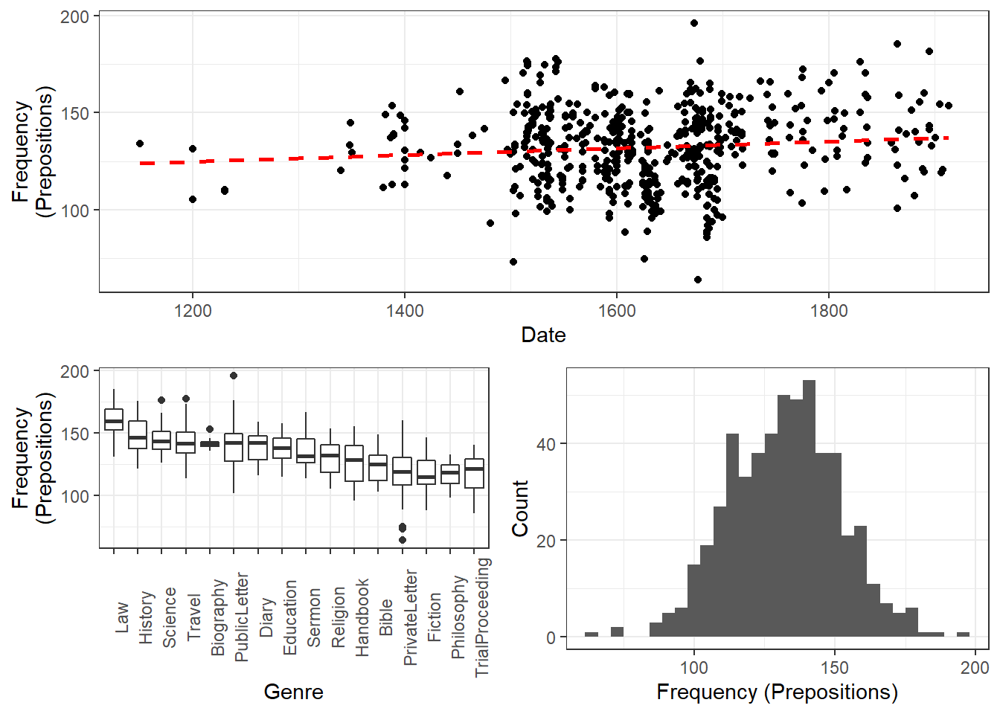
The scatter plot in the upper panel indicates that the use of prepositions has moderately increased over time while the boxplots in the lower left panel show that the genres differ quite substantially with respect to their median frequencies of prepositions per text. Finally, the histogram in the lower right panel show that preposition use is distributed normally with a mean of 132.2 prepositions per text.
p4 <- ggplot(lmmdata, aes(Date, Prepositions)) +
geom_point() +
labs(x = "Year", y = "Prepositions per 1,000 words") +
geom_smooth(method = "lm") +
theme_bw()
p5 <- ggplot(lmmdata, aes(Region, Prepositions)) +
geom_boxplot() +
labs(x = "Region", y = "Prepositions per 1,000 words") +
geom_smooth(method = "lm") +
theme_bw()
grid.arrange(p4, p5, nrow = 1)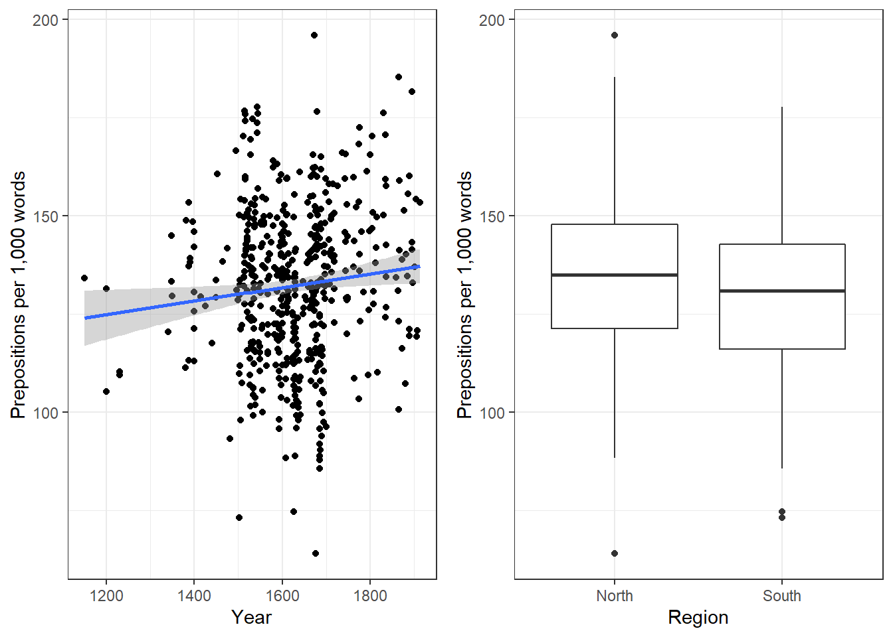
ggplot(lmmdata, aes(Date, Prepositions)) +
geom_point() +
facet_wrap(~ Genre, nrow = 4) +
geom_smooth(method = "lm") +
theme_bw() +
labs(x = "Date of composition", y = "Prepositions per 1,000 words") +
coord_cartesian(ylim = c(0, 220))
Centring or scaling numeric variables is useful for later interpretation of regression models: if the date variable was not centred, the regression would show the effects of variables at year 0(!). If numeric variables are scaled, other variables are variables are considered relative not to 0 but to the mean of that variable (in this case the mean of years in our data). Centring simply means that the mean of the numeric variable is subtracted from each value.
lmmdata$DateUnscaled <- lmmdata$Date
lmmdata$Date <- scale(lmmdata$Date, scale = F)
# inspect data
head(lmmdata); str(lmmdata)## Date Genre Text Prepositions Region DateUnscaled
## 1 109.87 Science albin 166.0 North 1736
## 2 84.87 Education anon 139.9 North 1711
## 3 181.87 PrivateLetter austen 130.8 North 1808
## 4 251.87 Education bain 151.3 North 1878
## 5 116.87 Education barclay 145.7 North 1743
## 6 281.87 Education benson 120.8 North 1908## 'data.frame': 537 obs. of 6 variables:
## $ Date : num [1:537, 1] 109.9 84.9 181.9 251.9 116.9 ...
## ..- attr(*, "scaled:center")= num 1626
## $ Genre : chr "Science" "Education" "PrivateLetter" "Education" ...
## $ Text : chr "albin" "anon" "austen" "bain" ...
## $ Prepositions: num 166 140 131 151 146 ...
## $ Region : chr "North" "North" "North" "North" ...
## $ DateUnscaled: num 1736 1711 1808 1878 1743 ...We now set up a fixed-effects model with the “glm” function and a mixed-effects model using the “glmer” function with Genre as a random effect.
library(lme4)
# generate models
m0.glm <- glm(Prepositions ~ 1, family = gaussian, data = lmmdata)
m0.glmer = glmer(Prepositions ~ 1 + (1|Genre), data = lmmdata, family = "gaussian")Now that we have created the base-line models, we will test whether including a random effect structure is mathematically justified. It is important to note here that we are not going to test if including a random effect structure is theoretically motivated but simply if it causes a decrease in variance.
2.4 Testing Random Effects
As a first step in the modelling process, we now need to determine whether or not including a random effect structure is justified. We do so by comparing the base-line model without random intercepts to the model with random intercepts using a Likelihood Ratio Test. A short word of warning is in order here regarding the specific of the model: we need to set “REML = T” because Relative Estimate Maximum Likelihood (REML) provides better estimates for the random effects part of the model compared with the simpler Maximum Likelihood (ML) specification (Field, Miles, and Field 2012, 879).
x2 = -2*logLik(m0.glm, REML = T)+2*logLik(m0.glmer, REML = T)
x2 <- x2 <- x2[[1]]
list(x2, pchisq(x2, df=2, lower.tail=F))## [[1]]
## [1] 222.4
##
## [[2]]
## [1] 0.0000000000000000000000000000000000000000000000005049The inclusion of a random effect structure with random intercepts is justified based on the Likelihood Ratio Test.
As a note on model comparisons: when we compare mixed-effects models, the REML specification must be “FALSE” or set to “method =”ML" (Maximum Likelihood) (Field, Miles, and Field 2012, 879). This is because “ML” produces more accurate estimates of fixed regression parameters. In contrast, one should use “REML” when comparing fixed to mixed models as REML produces more accurate estimates of random variances (Twisk 2006).
2.5 Model Fitting
After having determined that including a random effect structure is justified, we can continue by fitting the model and including diagnostics as we go. Including diagnostics in the model fitting process can save time and prevent relying on models which only turn out to be unstable if we would perform the diagnostics after the fact.
We begin fitting our model by adding Date as a fixed effect and compare this model to our mixed-effects base-line model to see if Date improved the model fit by explaining variance and if Date significantly correlates with our dependent variable (this means that the difference between the models is the effect (size) of “Date”!)
m1.glmer <- glmer(Prepositions ~ (1|Genre) + Date, data = lmmdata)
anova(m1.glmer, m0.glmer, test = "Chi")## Data: lmmdata
## Models:
## m0.glmer: Prepositions ~ 1 + (1 | Genre)
## m1.glmer: Prepositions ~ (1 | Genre) + Date
## npar AIC BIC logLik deviance Chisq Df Pr(>Chisq)
## m0.glmer 3 4502 4515 -2248 4496
## m1.glmer 4 4495 4512 -2244 4487 8.93 1 0.0028 **
## ---
## Signif. codes: 0 '***' 0.001 '**' 0.01 '*' 0.05 '.' 0.1 ' ' 1The model with Date is the better model (significant p-value and lower AIC). The significant p-value shows that “Date” correlates significantly with “Prepositions” (\(\chi\)2(1) = 8.93, p = .0028). The \(\chi\)2 value here is labelled “L.Ratio” and the degrees of freedom are calculated by subtracting the smaller number of DFs from the larger number of DFs.
We now test whether Region should also be part of the final minimal adequate model. The easiest way to add predictors is by using the “predict” function (it saves time and typing).
# generate model
m2.glmer <- update(m1.glmer, .~.+ Region)
# test vifs
library(car)
car::vif(m2.glmer)## Date Region
## 1.203 1.203# compare models
anova(m2.glmer, m1.glmer, test = "Chi")## Data: lmmdata
## Models:
## m1.glmer: Prepositions ~ (1 | Genre) + Date
## m2.glmer: Prepositions ~ (1 | Genre) + Date + Region
## npar AIC BIC logLik deviance Chisq Df Pr(>Chisq)
## m1.glmer 4 4495 4512 -2244 4487
## m2.glmer 5 4495 4516 -2242 4485 2.39 1 0.12Three things tell us that Region should not be included: (i) the AIC does not decrease, (ii) the BIC increases(!), and the p-value is higher than .05. This means, that we will continue fitting the model without having Region included. Well… not quite - just as a note on including variables: while Region is not significant as a main effect, it must still be included in a model if it were part of a significant interaction. To test if this is indeed the case, we fit another model with the interaction between Date and Region as predictor.
# generate model
m3.glmer <- update(m1.glmer, .~.+Region*Date)
# extract vifs
car::vif(m3.glmer)## Date Region Date:Region
## 1.969 1.203 1.780# compare models
anova(m3.glmer, m1.glmer, test = "Chi")## Data: lmmdata
## Models:
## m1.glmer: Prepositions ~ (1 | Genre) + Date
## m3.glmer: Prepositions ~ (1 | Genre) + Date + Region + Date:Region
## npar AIC BIC logLik deviance Chisq Df Pr(>Chisq)
## m1.glmer 4 4495 4512 -2244 4487
## m3.glmer 6 4496 4522 -2242 4484 2.89 2 0.24Again, the high p-value and the increase in AIC and BIC show that we have found our minimal adequate model with only contains Date as a main effect. In a next step, we can inspect the final minimal adequate model, i.e. the most parsimonious (the model that explains a maximum of variance with a minimum of predictors).
# inspect results
summary(m1.glmer)## Linear mixed model fit by REML ['lmerMod']
## Formula: Prepositions ~ (1 | Genre) + Date
## Data: lmmdata
##
## REML criterion at convergence: 4491
##
## Scaled residuals:
## Min 1Q Median 3Q Max
## -3.735 -0.657 0.006 0.661 3.597
##
## Random effects:
## Groups Name Variance Std.Dev.
## Genre (Intercept) 159 12.6
## Residual 229 15.1
## Number of obs: 537, groups: Genre, 16
##
## Fixed effects:
## Estimate Std. Error t value
## (Intercept) 133.88516 3.24749 41.2
## Date 0.01894 0.00632 3.0
##
## Correlation of Fixed Effects:
## (Intr)
## Date 0.0052.6 Model Diagnostics
We can now evaluate the goodness of fit of the model and check if mathematical requirements and assumptions have been violated. In a first step, we generate diagnostic plots that focus on the random effect structure.
plot(m1.glmer, Genre ~ resid(.), abline = 0 ) # generate diagnostic plots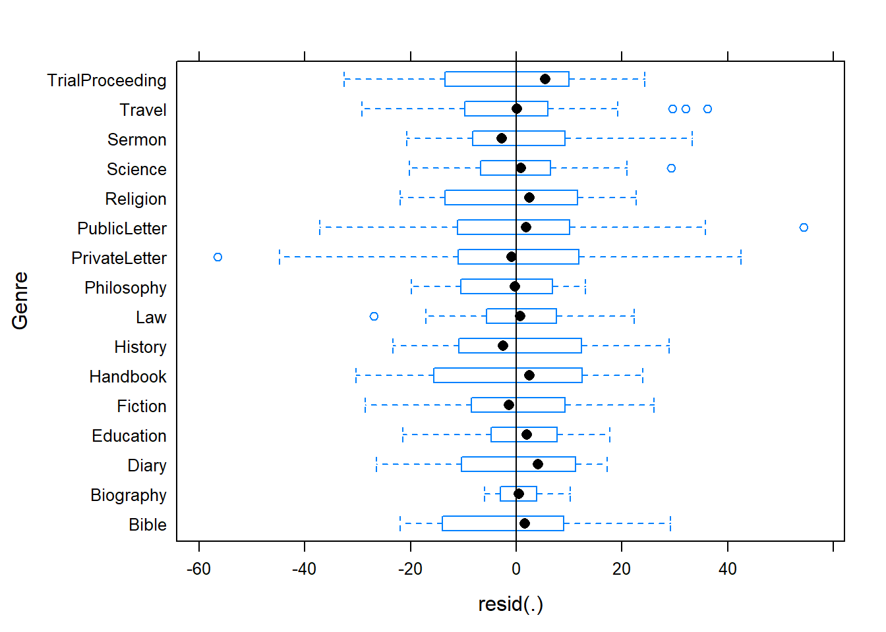
The plot shows that there are some outliers (points outside the boxes) and that the variability within letters is greater than in other genres we therefore examine the genres in isolation standardized residuals versus fitted values (Pinheiro and Bates 2000, 175).
plot(m1.glmer, resid(., type = "pearson") ~ fitted(.) | Genre, id = 0.05,
adj = -0.3, pch = 20, col = "gray40")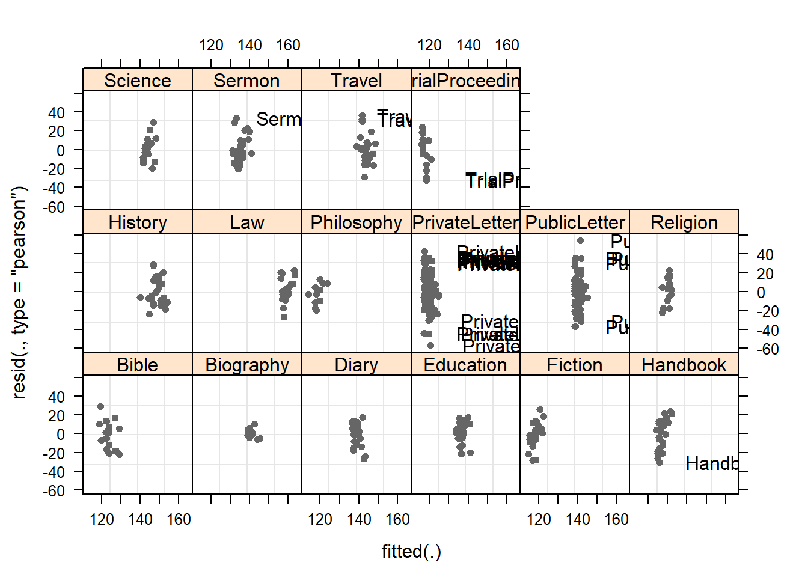
The plot shows the standardized residuals (or Pearson’s residuals) versus fitted values and suggests that there are outliers in the data (the names elements in the plots). To check if these outliers are a cause for concern, we will now use a Levene’s test to check if the variance is distributed homogeneously (homoscedasticity) or whether the assumption of variance homogeneity is violated (due to the outliers).
# check homogeneity
leveneTest(lmmdata$Prepositions, lmmdata$Genre, center = mean)## Levene's Test for Homogeneity of Variance (center = mean)
## Df F value Pr(>F)
## group 15 1.74 0.04 *
## 521
## ---
## Signif. codes: 0 '***' 0.001 '**' 0.01 '*' 0.05 '.' 0.1 ' ' 1The Levene’s test shows that the variance is distributed unevenly across genres which means that we do not simply continue but should either remove problematic data points (outliers) or use a weighing method.
In this case, we create a new model which uses weights to compensate for heterogeneity of variance and thus the influence of outliers - which is an alternative to removing the data points and rerunning the analysis (Pinheiro and Bates 2000, 177). However, to do so, we need to use a different function (the “lmer” function) which means that we have to create two models: the “old” minimal adequate model and the “new” minimal adequate model with added weights. After we have created these models, we will compare them to see if including weights has improved the fit.
library(nlme)
m4.lme = lme(Prepositions ~ Date, random = ~1|Genre, data = lmmdata, method = "ML")
m5.lme <- update(m4.lme, weights = varIdent(form = ~ 1 | Genre))
# compare models
anova(m5.lme, m4.lme)## Model df AIC BIC logLik Test L.Ratio p-value
## m5.lme 1 19 4486 4567 -2224
## m4.lme 2 4 4495 4512 -2244 1 vs 2 39.17 0.0006The weight model (m5.lme) that uses weights to account for unequal variance is performing significantly better than the model without weights (m4.lme) and we therefore switch to the weight model and inspect its parameters.
# inspect results
summary(m5.lme) ## Linear mixed-effects model fit by maximum likelihood
## Data: lmmdata
## AIC BIC logLik
## 4486 4567 -2224
##
## Random effects:
## Formula: ~1 | Genre
## (Intercept) Residual
## StdDev: 12.26 14.34
##
## Variance function:
## Structure: Different standard deviations per stratum
## Formula: ~1 | Genre
## Parameter estimates:
## Bible Biography Diary Education Fiction
## 1.0000 0.3407 0.8695 0.7888 0.9117
## Handbook History Law Philosophy PrivateLetter
## 1.0965 0.9787 0.7849 0.7370 1.1906
## PublicLetter Religion Science Sermon Travel
## 1.2189 0.9746 0.8486 0.9708 1.0862
## TrialProceeding
## 1.2602
## Fixed effects: Prepositions ~ Date
## Value Std.Error DF t-value p-value
## (Intercept) 133.96 3.1444 520 42.60 0.0000
## Date 0.02 0.0055 520 3.99 0.0001
## Correlation:
## (Intr)
## Date 0.004
##
## Standardized Within-Group Residuals:
## Min Q1 Med Q3 Max
## -3.31912 -0.67972 0.01469 0.69872 3.10388
##
## Number of Observations: 537
## Number of Groups: 16We can also use an ANOVA display which is more to the point.
anova(m5.lme) ## numDF denDF F-value p-value
## (Intercept) 1 520 1813.9 <.0001
## Date 1 520 15.9 0.0001As we did before, we now check, whether the final minimal model (with weights) outperforms an intercept-only base-line model.
# creat base-line model
m0.lme = lme(Prepositions ~ 1, random = ~1|Genre, data = lmmdata, method = "ML", weights = varIdent(form = ~ 1 | Genre))
anova(m5.lme, m0.lme) # test if date is significant## Model df AIC BIC logLik Test L.Ratio p-value
## m5.lme 1 19 4486 4567 -2224
## m0.lme 2 18 4496 4573 -2230 1 vs 2 12.44 0.0004Our final minimal adequate model with weights performs significantly better than an intercept only base-line model. Before doing the final diagnostics, we well inspect the estimates for the random effect structure to check if there are values which require further inspection (e.g. because they are drastically different from all other values).
# extract estimates and sd for fixed and random effects
intervals(m5.lme) ## Approximate 95% confidence intervals
##
## Fixed effects:
## lower est. upper
## (Intercept) 127.79833 133.96402 140.12970
## Date 0.01105 0.02174 0.03244
## attr(,"label")
## [1] "Fixed effects:"
##
## Random Effects:
## Level: Genre
## lower est. upper
## sd((Intercept)) 8.525 12.26 17.64
##
## Variance function:
## lower est. upper
## Biography 0.2139 0.3407 0.5427
## Diary 0.6317 0.8695 1.1968
## Education 0.5792 0.7888 1.0743
## Fiction 0.6529 0.9117 1.2730
## Handbook 0.7838 1.0965 1.5340
## History 0.7325 0.9787 1.3076
## Law 0.5557 0.7849 1.1088
## Philosophy 0.4650 0.7370 1.1679
## PrivateLetter 0.9512 1.1906 1.4902
## PublicLetter 0.9472 1.2189 1.5686
## Religion 0.6694 0.9746 1.4190
## Science 0.5533 0.8486 1.3013
## Sermon 0.7296 0.9708 1.2918
## Travel 0.7927 1.0862 1.4883
## TrialProceeding 0.8689 1.2602 1.8275
## attr(,"label")
## [1] "Variance function:"
##
## Within-group standard error:
## lower est. upper
## 11.85 14.34 17.36The random effect estimates do not show any outliers or drastically increased or decreased values which means that the random effect structure is fine.
2.7 Effect Sizes
We will now extract effect sizes (in the example: the effect size of date) and calculate normalized effect size measures (this effect size measure works for all fixed effects). To calculate the effect size, take the square root of the squared t-value divided by the t-value squared plus the degrees of freedom:
r = sqrt(t^2^/(t^2^+df)).
A brief word of warning is in order here: only apply this function to main effects that are not involved in interactions as they are meaningless because the amount of variance explained by main effects involved in interactions is unclear (Field, Miles, and Field 2012, 641).
library(ggeffects)
# calculate effect size
ggeffect(m5.lme)## $Date
##
## # Predicted values of Prepositions
## # x = Date
##
## x | Predicted | SE | 95% CI
## ------------------------------------------
## -500 | 123.09 | 4.15 | [114.95, 131.24]
## -400 | 125.27 | 3.81 | [117.78, 132.76]
## -300 | 127.44 | 3.53 | [120.50, 134.38]
## -200 | 129.62 | 3.32 | [123.10, 136.13]
## -100 | 131.79 | 3.18 | [125.54, 138.04]
## 0 | 133.96 | 3.14 | [127.80, 140.13]
## 100 | 136.14 | 3.19 | [129.88, 142.40]
## 300 | 140.49 | 3.54 | [133.53, 147.45]
##
##
## attr(,"class")
## [1] "ggalleffects" "list"While we have already shown that the effect of Date is significant, it is small which means that the number of prepositions per text does not correlate very strongly with time. This suggests that other factors that are not included in the model also impact the frequency of prepositions (and probably more meaningfully, too).
Before turning to the diagnostics, we will use the fitted (or predicted) and the observed values with a regression line for the predicted values. This will not only show how good the model fit the data but also the direction and magnitude of the effect.
# extract predicted values
lmmdata$Predicted <- predict(m5.lme, lmmdata)
# plot predicted values
ggplot(lmmdata, aes(DateUnscaled, Predicted)) +
facet_wrap(~Genre) +
geom_point(aes(x = DateUnscaled, y = Prepositions), color = "gray80", size = .5) +
geom_smooth(aes(y = Predicted), color = "gray20", linetype = "solid",
se = T, method = "lm") +
guides(color=guide_legend(override.aes=list(fill=NA))) +
theme_set(theme_bw(base_size = 10)) +
theme(legend.position="top", legend.title = element_blank(),
panel.grid.major = element_blank(),
panel.grid.minor = element_blank()) +
xlab("Date of composition")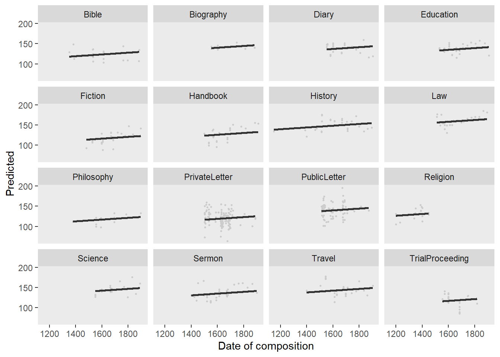
2.8 Model Diagnostics
We now create diagnostic plots. What we wish to see in the diagnostic plots is a cloud of dots in the middle of the window without any structure. What we do not want to see is a funnel-shaped cloud because this indicates an increase of the errors/residuals with an increase of the predictor(s) (because this would indicate heteroscedasticity) (Pinheiro and Bates 2000, 182).
# start plotting
par(mfrow = c(2, 2)) # display plots in 2 rows and 2 columns
plot(m5.lme, pch = 20, col = "black", lty = "dotted")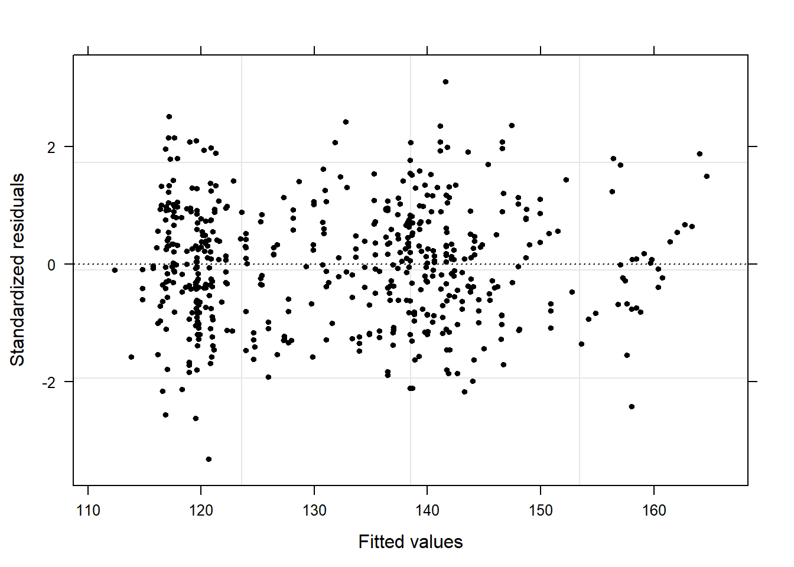
par(mfrow = c(1, 1))What a wonderful unstructured cloud - the lack of structure tells us that the model is “healthy” and does not suffer from heteroscedasticity. We will now create more diagnostic plots to find potential problems (Pinheiro and Bates 2000, 21).
# fitted values by Genre
plot(m5.lme, form = resid(., type = "p") ~ fitted(.) | Genre, abline = 0,
cex = .5, pch = 20, col = "black")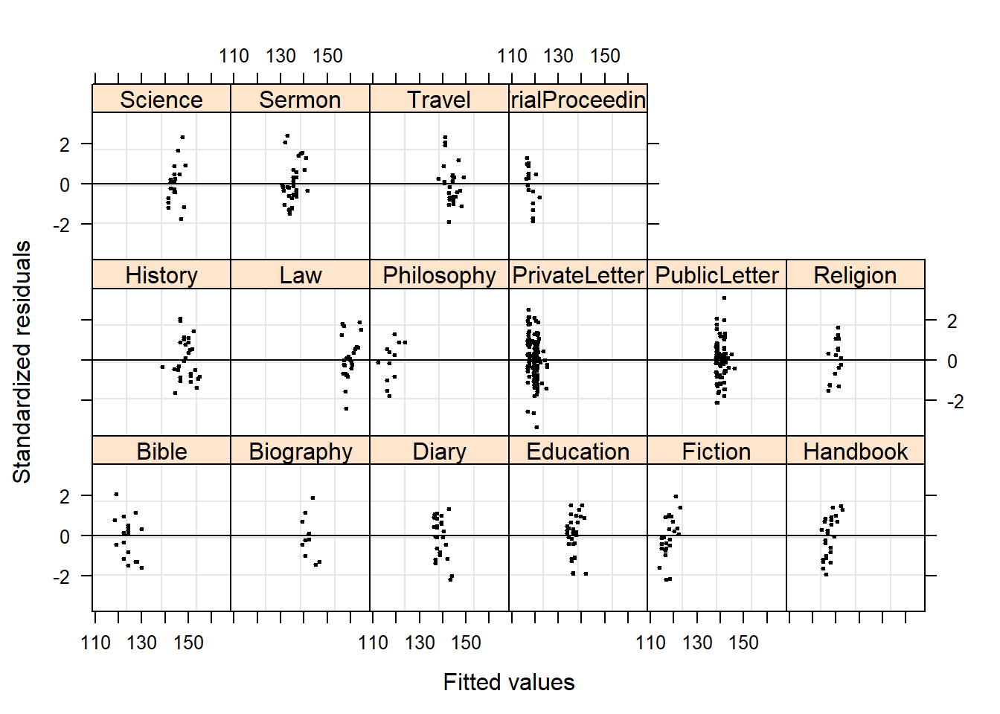
In contrast to the unweight model, no data points are named which indicates that the outliers do no longer have unwarranted influence on the model. Now, we check the residuals of fitted values against observed values (Pinheiro and Bates 2000, 179). What we would like to see is a straight, upwards going line.
# residuals of fitted values against observed
qqnorm(m5.lme, pch = 20, col = "black")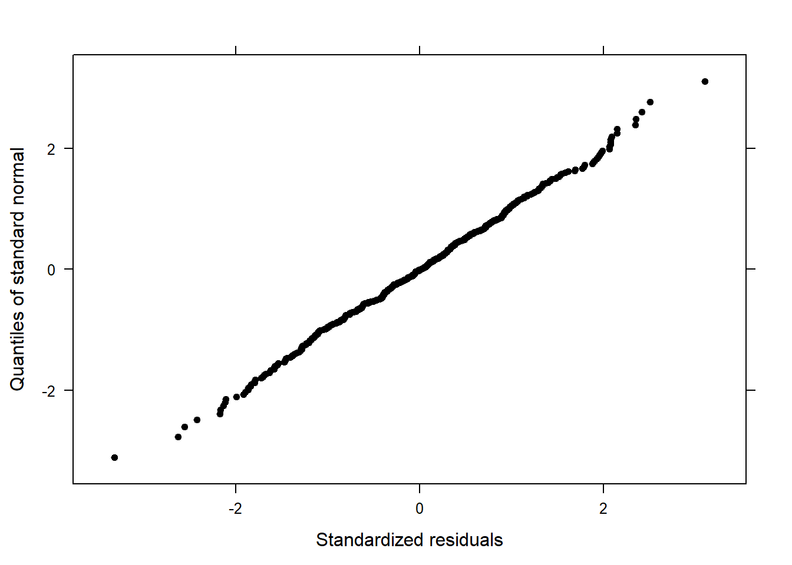
A beautiful, straight line! The qqplot does not indicate any problems. It is, unfortunately, rather common that the dots deviate from the straight line at the very bottom or the very tp which means that the model is good at estimating values around the middle of the dependent variable but rather bad at estimating lower or higher values. Next, we check the residuals by “Genre” (Pinheiro and Bates 2000, 179).
# residuals by genre
qqnorm(m5.lme, ~resid(.) | Genre, pch = 20, col = "black" )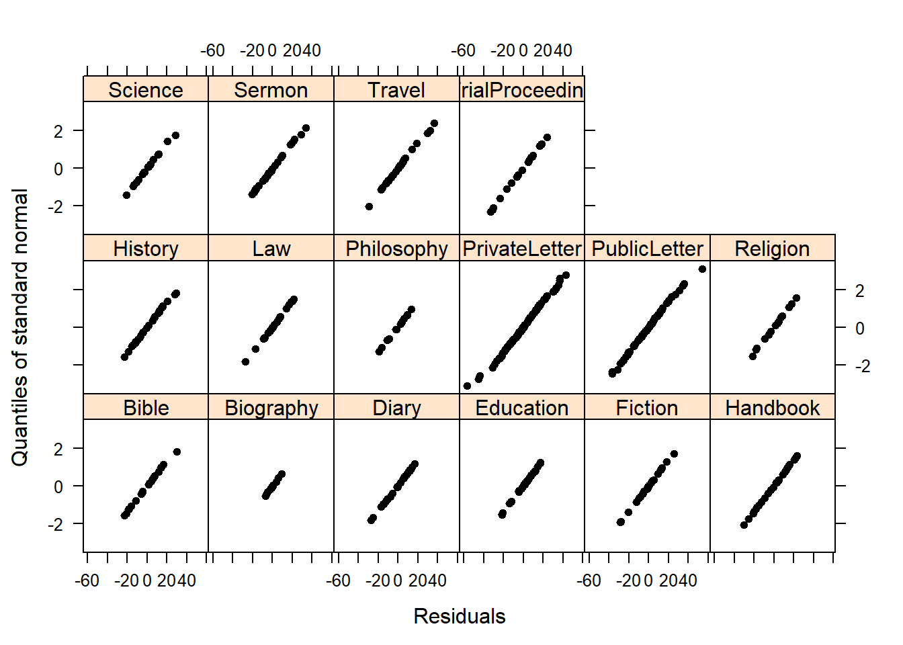
Beautiful straight lines - perfection! Now, we inspect the observed responses versus the within-group fitted values (Pinheiro and Bates 2000, 178).
# observed responses versus the within-group fitted values
plot(m5.lme, Prepositions ~ fitted(.), id = 0.05, adj = -0.3,
xlim = c(80, 220), cex = .8, pch = 20, col = "blue")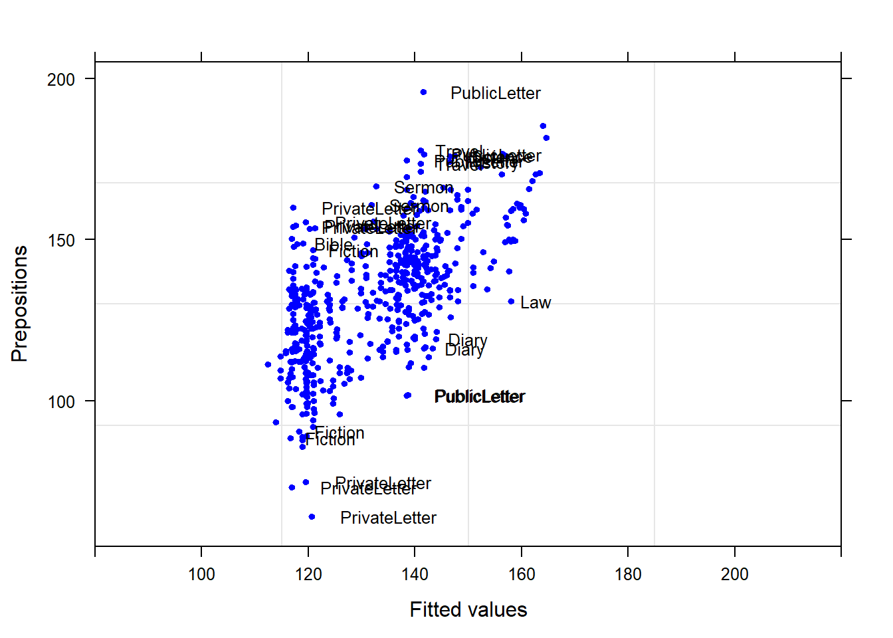
Although some data points are named, the plot does not show any structure, like a funnel, which would have been problematic.
2.9 Reporting Results
Before we do the write-up, we have a look at the model summary as this will provide us with at least some of the parameters that we want to report.
summary(m5.lme)## Linear mixed-effects model fit by maximum likelihood
## Data: lmmdata
## AIC BIC logLik
## 4486 4567 -2224
##
## Random effects:
## Formula: ~1 | Genre
## (Intercept) Residual
## StdDev: 12.26 14.34
##
## Variance function:
## Structure: Different standard deviations per stratum
## Formula: ~1 | Genre
## Parameter estimates:
## Bible Biography Diary Education Fiction
## 1.0000 0.3407 0.8695 0.7888 0.9117
## Handbook History Law Philosophy PrivateLetter
## 1.0965 0.9787 0.7849 0.7370 1.1906
## PublicLetter Religion Science Sermon Travel
## 1.2189 0.9746 0.8486 0.9708 1.0862
## TrialProceeding
## 1.2602
## Fixed effects: Prepositions ~ Date
## Value Std.Error DF t-value p-value
## (Intercept) 133.96 3.1444 520 42.60 0.0000
## Date 0.02 0.0055 520 3.99 0.0001
## Correlation:
## (Intr)
## Date 0.004
##
## Standardized Within-Group Residuals:
## Min Q1 Med Q3 Max
## -3.31912 -0.67972 0.01469 0.69872 3.10388
##
## Number of Observations: 537
## Number of Groups: 16library(sjPlot)
tab_model(m5.lme)| Prepositions | |||
|---|---|---|---|
| Predictors | Estimates | CI | p |
| (Intercept) | 133.96 | 127.80 – 140.13 | <0.001 |
| Date | 0.02 | 0.01 – 0.03 | <0.001 |
| Random Effects | |||
| σ2 | 205.71 | ||
| τ00 Genre | 150.39 | ||
| N Genre | 16 | ||
| Observations | 537 | ||
| Marginal R2 / Conditional R2 | 0.030 / NA | ||
A mixed-effect linear regression model which contained the genre of texts as random effect was fit to the data in a step-wise-step up procedure. Due to the presence of outliers in the data, weights were included into the model which led to a significantly improved model fit compared to an unweight model (\(\chi\)2(2): 39.17, p: 0.0006). The final minimal adequate model performed significantly better than an intercept-only base-line model (\(\chi\)2(1): 52.87, p <.0001) and showed that the frequency of prepositions increases significantly but only marginally with the date of composition (\(\chi\)2(2): 10.12, p: 0.0063, Pearson’s \(r\) = 0.172). Neither the region where the text was composed nor a higher order interaction between genre and region significantly correlated with the use of prepositions in the data.
2.10 Remarks on Prediction
While the number of intercepts, the model-reports, and the way how mixed- and fixed-effects arrive at predictions differ, their predictions are identical (at least when dealing with a simple random effect structure). Consider the following example where we create analogous fixed and mixed effect models and plot their predicted frequencies of prepositions per genre across the unscaled date of composition. The predictions of the mixed-effects model are plotted as a solid red line, wehile the predictions of the fixed-effects model are plotted as dashed blue lines.
# creat lm model
m5.lmeunweight <- lm(Prepositions ~ DateUnscaled + Genre, data = lmmdata)
lmmdata$lmePredictions <- fitted(m5.lmeunweight, lmmdata)
m5.lm <- lm(Prepositions ~ DateUnscaled + Genre, data = lmmdata)
lmmdata$lmPredictions <- fitted(m5.lm, lmmdata)
# plot predictions
ggplot(lmmdata, aes(x = DateUnscaled, y = lmePredictions, group = Genre)) +
geom_line(aes(y = lmmdata$lmePredictions), linetype = "solid", color = "red") +
geom_line(aes(y = lmmdata$lmPredictions), linetype = "dashed", color = "blue") +
facet_wrap(~ Genre, nrow = 4) +
theme_bw() +
labs(x = "Date of composition") +
labs(y = "Prepositions per 1,000 words") +
coord_cartesian(ylim = c(0, 220))
The predictions overlap perfectly which means that the predictions of both are identical - irrespective of whether genre is part of the mixed or the fixed effects structure.
3 Mixed-Effects Binomial Logistic Regression
We now turn to an extension of binomial logistic regression: mixed-effects binomial logistic regression. As is the case with linear mixed-effects models logistic mixed effects models have the following advantages over simpler statistical tests:
Mixed-effects models are multivariate, i.e. they test the effect of several predictors simultaneously while controlling for the effect of all other predictors.
Mixed models allow to statistically incorporate within-speaker variability and are thus fit to model hierarchical or nested data structures. This applies if several observations are produced by an individual speaker, for instance.
Mixed-models provide a wealth of diagnostic statistics which enables us to control e.g. multicollinearity, i.e. correlations between predictors, and to test whether conditions or requirements are violated (e.g. homogeneity of variance, etc.).
Major disadvantages of regression modelling are that they are prone to producing high \(\beta\)-errors (see Johnson 2009) and that they require rather large data sets.
3.1 Introduction
As is the case with linear mixed-effects models, binomial logistic mixed-effect models are multivariate analysis that treat data points as hierarchical or grouped in some way. In other words, they take into account that the data is nested in the sense that data points are produced by the same speaker or are grouped by some other characteristics. In mixed-models, hierarchical structures are modelled as random effects. If the random effect structure represents speakers then this means that a mixed-model would have a separate intercept and/or slope for each speaker.
Random Effects in linear models two parameters: the intercept (the point where the regression line crosses the y-axis) and the slope (the acclivity of the regression line). In contrast to linear mixed-effects models, random effects differ in the position and the slope of the logistic function that is applied to the likelihood of the dependent variable. random intercepts (centre left panel ) or various random slopes (centre right panel ), or both, various random intercepts and various random slopes (right panel ). In the following, we will only focus on models with random intercepts because this is the by far more common method and because including both random intercepts and random slopes requires huge amounts of data. Consider the Figure below to understand what is meant by “random intercepts”.
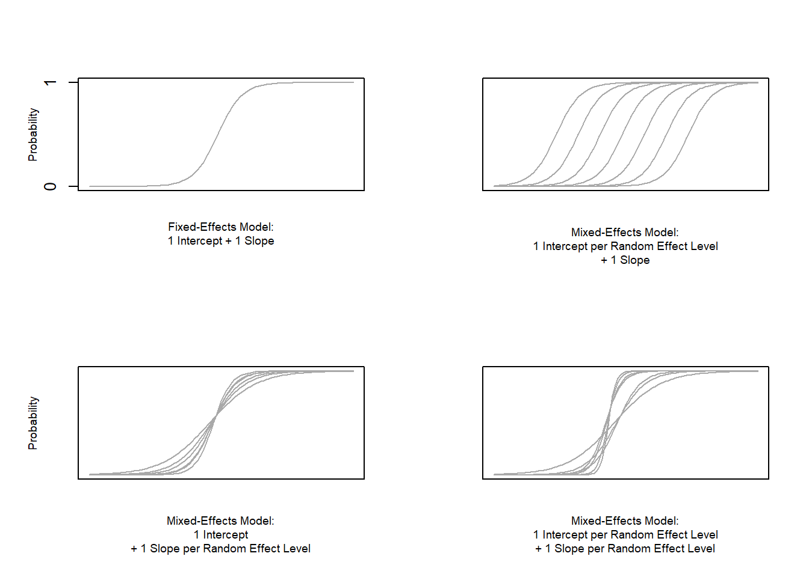
The upper left panel merely shows the logistic curve representing the predictions of a fixed-effects logistic regression with a single intercept and slope. The upper right panel shows the logistic curves representing the predictions of a of a mixed-effects logistic regression with random intercepts for each level of a grouping variable. The lower left panel shows the logistic curves representing the predictions of a mixed-effects logistic regression with one intercept but random slopes for each level of a grouping variable. The lower right panel shows the logistic curves representing the predictions of a mixed-effects logistic regression with random intercepts and random slopes for each level of a grouping variable.
After adding random intercepts, predictors (or fixed effects) are added to the model (just like with multiple regression). So mixed-effects are called mixed-effects because they contain both random and fixed effects.
In terms of general procedure, random effects are added first, and only after we have ascertained that including random effects is warranted, we test whether including fixed-effects is warranted (Field, Miles, and Field 2012). We test whether including random effects is warranted by comparing a model, that bases its estimates of the dependent variable solely on the base intercept, with a model that bases its estimates of the dependent variable solely on the intercepts of the random effect. If the mixed-effects model explains significantly more variance than the fixed-effects model without random effect structure, then we continue with the mixed-effects model. In other words, including random effects is justified if they reduce residual deviance.
3.2 Example: Discourse LIKE in Irish English
In this example we will investigate which factors correlate with the use of final discourse like (e.g. “The weather is shite, like!”) in Irish English. The data set represents speech units in a corpus that were coded for the speaker who uttered a given speech unit, the gender (Gender: Men versus Women) and age of that speaker (Age: Old versus Young), whether the interlocutors were of the same or a different gender (ConversationType: SameGender versus MixedGender), and whether another final discourse like had been used up to three speech units before (Priming: NoPrime versus Prime), whether or not the speech unit contained an final discourse like (SUFLike: 1 = yes, 0 = no. To begin with, we load the data and inspect the structure of the data set,
# load data
mblrdata <- read.table("https://slcladal.github.io/data/mblrdata.txt",
comment.char = "",# data does not contain comments
quote = "", # data does not contain quotes
sep = "\t", # data is tab separated
header = T) # data has column names
# inspect data structure
str(mblrdata)## 'data.frame': 2000 obs. of 6 variables:
## $ ID : chr "S1A-061$C" "S1A-023$B" "S1A-054$A" "S1A-090$B" ...
## $ Gender : chr "Women" "Women" "Women" "Women" ...
## $ Age : chr "Young" "Young" "Young" "Young" ...
## $ ConversationType: chr "MixedGender" "MixedGender" "SameGender" "MixedGender" ...
## $ Priming : chr "NoPrime" "NoPrime" "NoPrime" "NoPrime" ...
## $ SUFlike : int 0 0 0 0 0 1 1 0 0 1 ...As all variables except for the dependent variable (SUFlike) are character strings, we factorize the independent variables.
# def. variables to be factorized
vrs <- c("ID", "Age", "Gender", "ConversationType", "Priming")
# def. vector with variables
fctr <- which(colnames(mblrdata) %in% vrs)
# factorize variables
mblrdata[,fctr] <- lapply(mblrdata[,fctr], factor)
# relevel Age (Young = Reference)
mblrdata$Age <- relevel(mblrdata$Age, "Young")
# order data by ID
mblrdata <- mblrdata %>%
dplyr::arrange(ID)Before continuing, a few words about the minimum number of random effect levels and the minimum number of observations per random effect level are in order.
While many data points per random variable level increases statistical power and thus to more robust estimates of the random effects (Austin and Leckie 2018), it has been shown that small numbers of observations per random effect variable level do not cause serious bias and it does not negatively affect the estimates of the fixed-effects coefficients (Bell, Ferron, and Kromrey 2008, @clarke2008can, @clarke2007addressing, @maas2005sufficient). The minimum number of observations per random effect variable level is therefore 1.
In simulation study, (Bell, Ferron, and Kromrey 2008) tested the impact of random variable levels with only a single observation ranging from 0 to 70 percent. As long as there was a relatively high number of random effect variable levels (500 or more), small numbers of observations had almost no impact on bias and Type 1 error control.
After preparing the data, we have a look at the first six lines of the data set.
| ID | Gender | Age | ConversationType | Priming | SUFlike |
|---|---|---|---|---|---|
| S1A-001\(A |Men |Old |SameGender |NoPrime | 0| |S1A-001\)A | Men | Old | SameGender | NoPrime | 0 |
| S1A-001\(A |Men |Old |SameGender |NoPrime | 0| |S1A-001\)A | Men | Old | SameGender | NoPrime | 0 |
| S1A-001\(A |Men |Old |SameGender |NoPrime | 0| |S1A-001\)A | Men | Old | SameGender | NoPrime | 0 |
We now plot the data to inspect the relationships within the data set.
ggplot(mblrdata, aes(Gender, SUFlike, color = Priming)) +
facet_wrap(Age~ConversationType) +
stat_summary(fun.y = mean, geom = "point") +
stat_summary(fun.data = mean_cl_boot, geom = "errorbar", width = 0.2) +
theme_set(theme_bw(base_size = 10)) +
theme(legend.position = "top") +
labs(x = "", y = "Observed Probabilty of discourse like") +
scale_color_manual(values = c("gray20", "gray70"))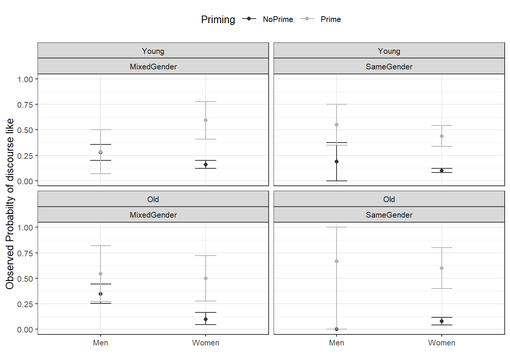
The upper left panel in the Figure above indicates that men sue discourse like more frequently than women. The centre right panel suggests that priming significantly increases the likelihood of discourse like being used. The centre left panel suggests that speakers use discourse like more frequently in mixed-gender conversations. However, the lower right panel indicates an interaction between gender and conversation type as women appear to use discourse like less frequently in same gender conversations while the conversation type does not seem to have an effect on men. After visualizing the data, we will now turn to the model building process.
3.3 Model Building
In a first step, we set the options and generate a distance matrix of the data.
library(rms)
# set options
options(contrasts =c("contr.treatment", "contr.poly"))
mblrdata.dist <- datadist(mblrdata)
options(datadist = "mblrdata.dist")In a next step, we generate fixed-effects minimal base-line models and a base-line mixed-model using the “glmer” function with a random intercept for ID (a lmer object of the final minimal adequate model will be created later).
# baseline model glm
m0.glm = glm(SUFlike ~ 1, family = binomial, data = mblrdata)
# base-line mixed-model
m0.glmer = glmer(SUFlike ~ (1|ID), data = mblrdata, family = binomial) 3.4 Testing the Random Effect
Now, we check if including the random effect is permitted by comparing the AICs from the glm to AIC from the glmer model. If the AIC of the glmer object is smaller than the AIC of the glm object, then this indicates that including random intercepts is justified.
aic.glmer <- AIC(logLik(m0.glmer))
aic.glm <- AIC(logLik(m0.glm))
aic.glmer; aic.glm## [1] 1828## [1] 1838The AIC of the glmer object is smaller which shows that including the random intercepts is justified. To confirm whether the AIC reduction is sufficient for justifying the inclusion of a random-effect structure, we also test whether the mixed-effects minimal base-line model explains significantly more variance by applying a Model Likelihood Ratio Test to the fixed- and the mixed effects minimal base-line models.
# test random effects
null.id = -2 * logLik(m0.glm) + 2 * logLik(m0.glmer)
pchisq(as.numeric(null.id), df=1, lower.tail=F) ## [1] 0.0006314# sig m0.glmer better than m0.glmThe p-value of the Model Likelihood Ratio Test is lower than .05 which shows that the inclusion of the random-effects structure is warranted. We can now continue with the model fitting process.
3.5 Model Fitting
The next step is to fit the model which means that we aim to find the “best” model, i.e. the minimal adequate model. In this case, we will use a manual step-wise step-up, forward elimination procedure. Before we begin with the model fitting process we need to add ´control = glmerControl(optimizer = “bobyqa”)´ to avoid unnecessary failures to converge.
m0.glmer <- glmer(SUFlike ~ 1+ (1|ID), family = binomial, data = mblrdata, control=glmerControl(optimizer="bobyqa"))During each step of the fitting procedure, we test whether certain assumptions on which the model relies are violated. To avoid incomplete information (a combination of variables does not occur in the data), we tabulate the variables we intend to include and make sure that all possible combinations are present in the data. Including variables although not all combinations are present in the data would lead to unreliable models that report (vastly) inaccurate results. A special case of incomplete information is complete separation which occurs if one predictor perfectly explains an outcome (in that case the incomplete information would be caused by a level of the dependent variable). In addition, we make sure that the VIFs do not exceed a maximum of 3 for main effects (Zuur, Ieno, and Elphick 2010) - Booth GD (1994) suggest that VIFs should ideally be lower than 1.5 - and 20 for interactions as higher values would indicate multicollinearity and thus that the model is unstable. The value of 20 should be taken with a pinch of salt because there is no clear consensus about what the maximum VIF for interactions should be or if it should be considered at all. The reason is that we would, of course, expect the VIFs to increase when we are dealing with interactions as the main effects that are part of the interaction are very likely to correlate with the interaction itself. However, if the VIFs are too high, then this will still cause the issues with the attribution of variance. The value of 20 was chosen as it is twice the most generous value for acceptable VIFs for main effects in the standard literature on multicollinearity (Zuur et al. 2009, @neter1990vif). Only once we have confirmed that the incomplete information, complete separation, and multicollinearity are not a major concern, we generate the more saturated model and test whether the inclusion of a predictor leads to a significant reduction in residual deviance. If the predictor explains a significant amount of variance, it is retained in the model while being disregarded in case it does not explain a sufficient quantity of variance.
# add Priming
ifelse(min(ftable(mblrdata$Priming, mblrdata$SUFlike)) == 0, "incomplete information", "okay")## [1] "okay"m1.glmer <- update(m0.glmer, .~.+Priming)
anova(m1.glmer, m0.glmer, test = "Chi") ## Data: mblrdata
## Models:
## m0.glmer: SUFlike ~ 1 + (1 | ID)
## m1.glmer: SUFlike ~ (1 | ID) + Priming
## npar AIC BIC logLik deviance Chisq Df Pr(>Chisq)
## m0.glmer 2 1828 1840 -912 1824
## m1.glmer 3 1703 1720 -848 1697 128 1 <0.0000000000000002 ***
## ---
## Signif. codes: 0 '***' 0.001 '**' 0.01 '*' 0.05 '.' 0.1 ' ' 1Since the tests do not show problems relating to incomplete information, because including Priming significantly improves the model fit (decrease in AIC and BIC values), and since it correlates significantly with our dependent variable, we include Priming into our model.
# add Age
ifelse(min(ftable(mblrdata$Age, mblrdata$SUFlike)) == 0, "incomplete information", "okay")## [1] "okay"m2.glmer <- update(m1.glmer, .~.+ Age)
ifelse(max(car::vif(m2.glmer)) <= 3, "VIFs okay", "VIFs unacceptable") ## [1] "VIFs okay"anova(m2.glmer, m1.glmer, test = "Chi") ## Data: mblrdata
## Models:
## m1.glmer: SUFlike ~ (1 | ID) + Priming
## m2.glmer: SUFlike ~ (1 | ID) + Priming + Age
## npar AIC BIC logLik deviance Chisq Df Pr(>Chisq)
## m1.glmer 3 1703 1720 -848 1697
## m2.glmer 4 1704 1727 -848 1696 0.56 1 0.45Anova(m2.glmer, test = "Chi")## Analysis of Deviance Table (Type II Wald chisquare tests)
##
## Response: SUFlike
## Chisq Df Pr(>Chisq)
## Priming 129.51 1 <0.0000000000000002 ***
## Age 0.57 1 0.45
## ---
## Signif. codes: 0 '***' 0.001 '**' 0.01 '*' 0.05 '.' 0.1 ' ' 1The ANOVAs show that Age is not significant and the first ANOVA also shows that the BIC has increased which indicates that Age does not decrease variance. In such cases, the variable should not be included.
However, if the second ANOVA would report Age as being marginally significant, a case could be made for including it but it would be better to change the ordering in which predictors are added to the model. This is, however, just a theoretical issue here as Age is clearly not significant.
# add Gender
ifelse(min(ftable(mblrdata$Gender, mblrdata$SUFlike)) == 0, "incomplete information", "okay")## [1] "okay"m3.glmer <- update(m1.glmer, .~.+Gender)
ifelse(max(car::vif(m3.glmer)) <= 3, "VIFs okay", "VIFs unacceptable") ## [1] "VIFs okay"anova(m3.glmer, m1.glmer, test = "Chi")## Data: mblrdata
## Models:
## m1.glmer: SUFlike ~ (1 | ID) + Priming
## m3.glmer: SUFlike ~ (1 | ID) + Priming + Gender
## npar AIC BIC logLik deviance Chisq Df Pr(>Chisq)
## m1.glmer 3 1703 1720 -848 1697
## m3.glmer 4 1679 1702 -836 1671 25.4 1 0.00000047 ***
## ---
## Signif. codes: 0 '***' 0.001 '**' 0.01 '*' 0.05 '.' 0.1 ' ' 1Anova(m3.glmer, test = "Chi")## Analysis of Deviance Table (Type II Wald chisquare tests)
##
## Response: SUFlike
## Chisq Df Pr(>Chisq)
## Priming 124.4 1 < 0.0000000000000002 ***
## Gender 28.6 1 0.00000009 ***
## ---
## Signif. codes: 0 '***' 0.001 '**' 0.01 '*' 0.05 '.' 0.1 ' ' 1Gender is significant and will therefore be included as a predictor (you can also observe that including Gender has substantially decreased both AIC and BIC).
# add ConversationType
ifelse(min(ftable(mblrdata$ConversationType, mblrdata$SUFlike)) == 0, "incomplete information", "okay")## [1] "okay"m4.glmer <- update(m3.glmer, .~.+ConversationType)
ifelse(max(car::vif(m4.glmer)) <= 3, "VIFs okay", "VIFs unacceptable") ## [1] "VIFs okay"anova(m4.glmer, m3.glmer, test = "Chi") ## Data: mblrdata
## Models:
## m3.glmer: SUFlike ~ (1 | ID) + Priming + Gender
## m4.glmer: SUFlike ~ (1 | ID) + Priming + Gender + ConversationType
## npar AIC BIC logLik deviance Chisq Df Pr(>Chisq)
## m3.glmer 4 1679 1702 -836 1671
## m4.glmer 5 1669 1697 -829 1659 12.8 1 0.00034 ***
## ---
## Signif. codes: 0 '***' 0.001 '**' 0.01 '*' 0.05 '.' 0.1 ' ' 1Anova(m4.glmer, test = "Chi")## Analysis of Deviance Table (Type II Wald chisquare tests)
##
## Response: SUFlike
## Chisq Df Pr(>Chisq)
## Priming 130.7 1 < 0.0000000000000002 ***
## Gender 13.4 1 0.00025 ***
## ConversationType 13.0 1 0.00031 ***
## ---
## Signif. codes: 0 '***' 0.001 '**' 0.01 '*' 0.05 '.' 0.1 ' ' 1ConversationType improves model fit (AIC and BIC decrease and it is reported as being significant) and will, therefore, be included in the model.
# add Priming*Age
ifelse(min(ftable(mblrdata$Priming, mblrdata$Age, mblrdata$SUFlike)) == 0, "incomplete information", "okay")## [1] "okay"m5.glmer <- update(m4.glmer, .~.+Priming*Age)
ifelse(max(car::vif(m5.glmer)) <= 10, "VIFs okay", "WARNING: high VIFs!") ## [1] "VIFs okay"anova(m5.glmer, m4.glmer, test = "Chi") ## Data: mblrdata
## Models:
## m4.glmer: SUFlike ~ (1 | ID) + Priming + Gender + ConversationType
## m5.glmer: SUFlike ~ (1 | ID) + Priming + Gender + ConversationType + Age +
## m5.glmer: Priming:Age
## npar AIC BIC logLik deviance Chisq Df Pr(>Chisq)
## m4.glmer 5 1669 1697 -829 1659
## m5.glmer 7 1672 1711 -829 1658 0.98 2 0.61The interaction between Priming and Age is not significant and will thus not be included.
# add Priming*Gender
ifelse(min(ftable(mblrdata$Priming, mblrdata$Gender, mblrdata$SUFlike)) == 0, "incomplete information", "okay")## [1] "okay"m6.glmer <- update(m4.glmer, .~.+Priming*Gender)
ifelse(max(car::vif(m6.glmer)) <= 10, "VIFs okay", "WARNING: high VIFs!") ## [1] "VIFs okay"anova(m6.glmer, m4.glmer, test = "Chi") ## Data: mblrdata
## Models:
## m4.glmer: SUFlike ~ (1 | ID) + Priming + Gender + ConversationType
## m6.glmer: SUFlike ~ (1 | ID) + Priming + Gender + ConversationType + Priming:Gender
## npar AIC BIC logLik deviance Chisq Df Pr(>Chisq)
## m4.glmer 5 1669 1697 -829 1659
## m6.glmer 6 1663 1697 -826 1651 7.42 1 0.0065 **
## ---
## Signif. codes: 0 '***' 0.001 '**' 0.01 '*' 0.05 '.' 0.1 ' ' 1Anova(m6.glmer, test = "Chi")## Analysis of Deviance Table (Type II Wald chisquare tests)
##
## Response: SUFlike
## Chisq Df Pr(>Chisq)
## Priming 131.96 1 < 0.0000000000000002 ***
## Gender 13.58 1 0.00023 ***
## ConversationType 10.71 1 0.00107 **
## Priming:Gender 7.45 1 0.00633 **
## ---
## Signif. codes: 0 '***' 0.001 '**' 0.01 '*' 0.05 '.' 0.1 ' ' 1The interaction between Priming and Gender improved model fit (AIC and BIC reduction) and significantly correlates with the use of speech-unit final LIKE. It will therefore be included in the model.
# add Priming*ConversationType
ifelse(min(ftable(mblrdata$Priming, mblrdata$ConversationType, mblrdata$SUFlike)) == 0, "incomplete information", "okay")## [1] "okay"m7.glmer <- update(m6.glmer, .~.+Priming*ConversationType)
ifelse(max(car::vif(m7.glmer)) <= 10, "VIFs okay", "WARNING: high VIFs!") ## [1] "VIFs okay"anova(m7.glmer, m6.glmer, test = "Chi")## Data: mblrdata
## Models:
## m6.glmer: SUFlike ~ (1 | ID) + Priming + Gender + ConversationType + Priming:Gender
## m7.glmer: SUFlike ~ (1 | ID) + Priming + Gender + ConversationType + Priming:Gender +
## m7.glmer: Priming:ConversationType
## npar AIC BIC logLik deviance Chisq Df Pr(>Chisq)
## m6.glmer 6 1663 1697 -826 1651
## m7.glmer 7 1663 1702 -825 1649 2.03 1 0.15The interaction between Priming and ConversationType does not significantly correlate with the use of speech-unit final LIKE and it does not explain much variance (AIC and BIC increase). It will be not be included in the model.
# add Age*Gender
ifelse(min(ftable(mblrdata$Age, mblrdata$Gender, mblrdata$SUFlike)) == 0, "incomplete information", "okay")## [1] "okay"m8.glmer <- update(m6.glmer, .~.+Age*Gender)
ifelse(max(car::vif(m8.glmer)) <= 10, "VIFs okay", "WARNING: high VIFs!") ## [1] "VIFs okay"anova(m8.glmer, m6.glmer, test = "Chi") ## Data: mblrdata
## Models:
## m6.glmer: SUFlike ~ (1 | ID) + Priming + Gender + ConversationType + Priming:Gender
## m8.glmer: SUFlike ~ (1 | ID) + Priming + Gender + ConversationType + Age +
## m8.glmer: Priming:Gender + Gender:Age
## npar AIC BIC logLik deviance Chisq Df Pr(>Chisq)
## m6.glmer 6 1663 1697 -826 1651
## m8.glmer 8 1666 1710 -825 1650 1.53 2 0.47The interaction between Age and Gender is not significant and will thus continue without it.
# add Age*ConversationType
ifelse(min(ftable(mblrdata$Age, mblrdata$ConversationType, mblrdata$SUFlike)) == 0, "incomplete information", "okay")## [1] "okay"m9.glmer <- update(m6.glmer, .~.+Age*ConversationType)
ifelse(max(car::vif(m9.glmer)) <= 10, "VIFs okay", "WARNING: high VIFs!") ## [1] "VIFs okay"anova(m9.glmer, m6.glmer, test = "Chi") ## Data: mblrdata
## Models:
## m6.glmer: SUFlike ~ (1 | ID) + Priming + Gender + ConversationType + Priming:Gender
## m9.glmer: SUFlike ~ (1 | ID) + Priming + Gender + ConversationType + Age +
## m9.glmer: Priming:Gender + ConversationType:Age
## npar AIC BIC logLik deviance Chisq Df Pr(>Chisq)
## m6.glmer 6 1663 1697 -826 1651
## m9.glmer 8 1666 1711 -825 1650 0.9 2 0.64The interaction between Age and ConversationType is not significant and will thus continue without it.
# add Gender*ConversationType
ifelse(min(ftable(mblrdata$Gender, mblrdata$ConversationType, mblrdata$SUFlike)) == 0, "incomplete information", "okay")## [1] "okay"m10.glmer <- update(m6.glmer, .~.+Gender*ConversationType)
ifelse(max(car::vif(m10.glmer)) <= 10, "VIFs okay", "WARNING: high VIFs!") ## [1] "VIFs okay"anova(m10.glmer, m6.glmer, test = "Chi") ## Data: mblrdata
## Models:
## m6.glmer: SUFlike ~ (1 | ID) + Priming + Gender + ConversationType + Priming:Gender
## m10.glmer: SUFlike ~ (1 | ID) + Priming + Gender + ConversationType + Priming:Gender +
## m10.glmer: Gender:ConversationType
## npar AIC BIC logLik deviance Chisq Df Pr(>Chisq)
## m6.glmer 6 1663 1697 -826 1651
## m10.glmer 7 1665 1704 -825 1651 0.34 1 0.56The interaction between Gender and ConversationType is insignificant and does not improve model fit (AIC and BIC reduction). It will therefore not be included in the model.
# add Priming*Age*Gender
ifelse(min(ftable(mblrdata$Priming,mblrdata$Age, mblrdata$Gender, mblrdata$SUFlike)) == 0, "incomplete information", "okay")## [1] "okay"m11.glmer <- update(m6.glmer, .~.+Priming*Age*Gender)
ifelse(max(car::vif(m11.glmer)) <= 10, "VIFs okay", "WARNING: high VIFs!") ## [1] "VIFs okay"anova(m11.glmer, m6.glmer, test = "Chi") ## Data: mblrdata
## Models:
## m6.glmer: SUFlike ~ (1 | ID) + Priming + Gender + ConversationType + Priming:Gender
## m11.glmer: SUFlike ~ (1 | ID) + Priming + Gender + ConversationType + Age +
## m11.glmer: Priming:Gender + Priming:Age + Gender:Age + Priming:Gender:Age
## npar AIC BIC logLik deviance Chisq Df Pr(>Chisq)
## m6.glmer 6 1663 1697 -826 1651
## m11.glmer 10 1668 1724 -824 1648 3.26 4 0.51The interaction between Priming, Age and Gender is not significant and we will thus continue without it.
# add Priming*Age*ConversationType
ifelse(min(ftable(mblrdata$Priming,mblrdata$Age, mblrdata$ConversationType, mblrdata$SUFlike)) == 0, "incomplete information", "okay")## [1] "okay"m12.glmer <- update(m6.glmer, .~.+Priming*Age*ConversationType)
ifelse(max(car::vif(m12.glmer)) <= 10, "VIFs okay", "WARNING: high VIFs!") ## [1] "VIFs okay"anova(m12.glmer, m6.glmer, test = "Chi")## Data: mblrdata
## Models:
## m6.glmer: SUFlike ~ (1 | ID) + Priming + Gender + ConversationType + Priming:Gender
## m12.glmer: SUFlike ~ (1 | ID) + Priming + Gender + ConversationType + Age +
## m12.glmer: Priming:Gender + Priming:Age + Priming:ConversationType +
## m12.glmer: ConversationType:Age + Priming:ConversationType:Age
## npar AIC BIC logLik deviance Chisq Df Pr(>Chisq)
## m6.glmer 6 1663 1697 -826 1651
## m12.glmer 11 1666 1728 -822 1644 6.92 5 0.23The interaction between Priming, Age and ConversationType is not significant and we will thus continue without it.
# add Priming*Gender*ConversationType
ifelse(min(ftable(mblrdata$Priming,mblrdata$Gender, mblrdata$ConversationType, mblrdata$SUFlike)) == 0, "incomplete information", "okay")## [1] "okay"m13.glmer <- update(m6.glmer, .~.+Priming*Gender*ConversationType)
ifelse(max(car::vif(m13.glmer)) <= 10, "VIFs okay", "WARNING: high VIFs!") ## [1] "WARNING: high VIFs!"anova(m13.glmer, m6.glmer, test = "Chi")## Data: mblrdata
## Models:
## m6.glmer: SUFlike ~ (1 | ID) + Priming + Gender + ConversationType + Priming:Gender
## m13.glmer: SUFlike ~ (1 | ID) + Priming + Gender + ConversationType + Priming:Gender +
## m13.glmer: Priming:ConversationType + Gender:ConversationType + Priming:Gender:ConversationType
## npar AIC BIC logLik deviance Chisq Df Pr(>Chisq)
## m6.glmer 6 1663 1697 -826 1651
## m13.glmer 9 1660 1710 -821 1642 9.66 3 0.022 *
## ---
## Signif. codes: 0 '***' 0.001 '**' 0.01 '*' 0.05 '.' 0.1 ' ' 1Anova(m13.glmer, test = "Chi")## Analysis of Deviance Table (Type II Wald chisquare tests)
##
## Response: SUFlike
## Chisq Df Pr(>Chisq)
## Priming 129.35 1 < 0.0000000000000002 ***
## Gender 11.83 1 0.00058 ***
## ConversationType 8.53 1 0.00349 **
## Priming:Gender 3.49 1 0.06162 .
## Priming:ConversationType 1.81 1 0.17878
## Gender:ConversationType 0.15 1 0.69391
## Priming:Gender:ConversationType 6.27 1 0.01230 *
## ---
## Signif. codes: 0 '***' 0.001 '**' 0.01 '*' 0.05 '.' 0.1 ' ' 1Although the VIFs are higher than 20, the maximum value is 25.868 and thus not excessive. And since the three-way interaction between Priming, Gender, and ConversationType is not only significantly correlated with the dependent variable but also decreases AIC, we will include it in the model. However, it should be noted that there is a BIC increase(!) - it could be argued that this argues against including this three-way interaction. This is a judgement-call and depends on whether significance, AIC, or BIC is the main criterion for including predictors. Since we chose a p-value based approach here and have so far focused more on the AIC, we decide to disregard the BIC increase (it would be good practice to state that a BIC increase had taken place in a footnote though).
# add Age*Gender*ConversationType
ifelse(min(ftable(mblrdata$Age,mblrdata$Gender, mblrdata$ConversationType, mblrdata$SUFlike)) == 0, "incomplete information", "okay")## [1] "okay"m14.glmer <- update(m13.glmer, .~.+Age*Gender*ConversationType)
ifelse(max(car::vif(m14.glmer)) <= 10, "VIFs okay", "WARNING: high VIFs!") ## [1] "WARNING: high VIFs!"car::vif(m14.glmer)## Priming Gender
## 7.712 2.649
## ConversationType Age
## 31.165 3.796
## Priming:Gender Priming:ConversationType
## 10.286 23.859
## Gender:ConversationType Gender:Age
## 33.433 5.814
## ConversationType:Age Priming:Gender:ConversationType
## 19.786 24.950
## Gender:ConversationType:Age
## 21.846In this case, the VIFs are excessive and have values higher than 30 which shows an unacceptable degree of multicollinearity so that we abort and move on the next model.
# add Priming*Age*Gender*ConversationType
ifelse(min(ftable(mblrdata$Priming,mblrdata$Age,mblrdata$Gender, mblrdata$ConversationType, mblrdata$SUFlike)) == 0, "incomplete information", "okay")## [1] "incomplete information"m15.glmer <- update(m13.glmer, .~.+Priming*Age*Gender*ConversationType)
ifelse(max(car::vif(m15.glmer)) <= 10, "VIFs okay", "WARNING: high VIFs!") ## [1] "WARNING: high VIFs!"car::vif(m15.glmer)## Priming Gender
## 15.742 2.786
## ConversationType Age
## 28.061 3.900
## Priming:Gender Priming:ConversationType
## 18.715 30.022
## Gender:ConversationType Priming:Age
## 30.344 9.501
## Gender:Age ConversationType:Age
## 6.695 31637533.686
## Priming:Gender:ConversationType Priming:Gender:Age
## 31.550 11.586
## Priming:ConversationType:Age Gender:ConversationType:Age
## 9086362.739 30682029.288
## Priming:Gender:ConversationType:Age
## 7981201.727Again, the VIFs are excessive! As this was the last possible model, we have found our final minimal adequate model in m13.glmer.
In a next step, we create an overview of model comparisons which serves as a summary for the model fitting process and provides AIC, BIC, and \(\chi\)2 values.
source("https://slcladal.github.io/rscripts/ModelFittingSummarySWSU.r")
# comparisons of glmer objects
m1.m0 <- anova(m1.glmer, m0.glmer, test = "Chi")
m2.m1 <- anova(m2.glmer, m1.glmer, test = "Chi")
m3.m1 <- anova(m3.glmer, m1.glmer, test = "Chi")
m4.m3 <- anova(m4.glmer, m3.glmer, test = "Chi")
m5.m4 <- anova(m5.glmer, m4.glmer, test = "Chi")
m6.m4 <- anova(m6.glmer, m4.glmer, test = "Chi")
m7.m6 <- anova(m7.glmer, m6.glmer, test = "Chi")
m8.m6 <- anova(m8.glmer, m6.glmer, test = "Chi")
m9.m6 <- anova(m9.glmer, m6.glmer, test = "Chi")
m10.m6 <- anova(m10.glmer, m6.glmer, test = "Chi")
m11.m6 <- anova(m11.glmer, m6.glmer, test = "Chi")
m12.m6 <- anova(m12.glmer, m6.glmer, test = "Chi")
m13.m6 <- anova(m13.glmer, m6.glmer, test = "Chi")
# create a list of the model comparisons
mdlcmp <- list(m1.m0, m2.m1, m3.m1, m4.m3, m5.m4, m6.m4, m7.m6, m8.m6, m9.m6, m10.m6, m11.m6, m12.m6, m13.m6)
# summary table for model fitting
mdlft <- mdl.fttng.swsu(mdlcmp)
mdlft <- mdlft[,-2]
kable(mdlft, caption = "Model fitting process summary.")| Model | Term Added | Compared to… | DF | AIC | BIC | LogLikelihood | Residual Deviance | X2 | X2DF | p-value | Significance |
|---|---|---|---|---|---|---|---|---|---|---|---|
| m1.glmer | 1+Priming | m0.glmer | 3 | 1702.77 | 1719.58 | -848.39 | 1696.77 | 127.72 | 1 | 0 | p < .001*** |
| m2.glmer | Age | m1.glmer | 4 | 1704.21 | 1726.61 | -848.11 | 1696.21 | 0.56 | 1 | 0.45323 | n.s. |
| m3.glmer | Gender | m1.glmer | 4 | 1679.4 | 1701.8 | -835.7 | 1671.4 | 25.38 | 1 | 0 | p < .001*** |
| m4.glmer | ConversationType | m3.glmer | 5 | 1668.58 | 1696.59 | -829.29 | 1658.58 | 12.81 | 1 | 0.00034 | p < .001*** |
| m5.glmer | Age+Priming:Age | m4.glmer | 7 | 1671.6 | 1710.81 | -828.8 | 1657.6 | 0.98 | 2 | 0.61134 | n.s. |
| m6.glmer | Priming:Gender | m4.glmer | 6 | 1663.16 | 1696.77 | -825.58 | 1651.16 | 7.42 | 1 | 0.00645 | p < .01 ** |
| m7.glmer | Priming:ConversationType | m6.glmer | 7 | 1663.13 | 1702.34 | -824.57 | 1649.13 | 2.03 | 1 | 0.15427 | n.s. |
| m8.glmer | Age+Gender:Age | m6.glmer | 8 | 1665.63 | 1710.44 | -824.82 | 1649.63 | 1.53 | 2 | 0.46535 | n.s. |
| m9.glmer | Age+ConversationType:Age | m6.glmer | 8 | 1666.26 | 1711.07 | -825.13 | 1650.26 | 0.9 | 2 | 0.63689 | n.s. |
| m10.glmer | Gender:ConversationType | m6.glmer | 7 | 1664.82 | 1704.03 | -825.41 | 1650.82 | 0.34 | 1 | 0.55773 | n.s. |
| m11.glmer | Age+Gender:Age+Priming:Age+Priming:Gender:Age | m6.glmer | 10 | 1667.9 | 1723.91 | -823.95 | 1647.9 | 3.26 | 4 | 0.5148 | n.s. |
| m12.glmer | Age+ConversationType:Age+Priming:Age+Priming:ConversationType+Priming:ConversationType:Age+Priming:Gender+Priming:GenderSUFlike+SUFlike | m6.glmer | 11 | 1666.24 | 1727.85 | -822.12 | 1644.24 | 6.92 | 5 | 0.22642 | n.s. |
| m13.glmer | Gender:ConversationType+Priming:ConversationType+Priming:Gender:ConversationType | m6.glmer | 9 | 1659.51 | 1709.91 | -820.75 | 1641.51 | 9.66 | 3 | 0.0217 | p < .05 * |
We now rename our final minimal adequate model, test whether it performs significantly better than the minimal base-line model, and print the regression summary.
mlr.glmer <- m13.glmer # rename final minimal adequate model
anova(mlr.glmer, m0.glmer, test = "Chi") # final model better than base-line model## Data: mblrdata
## Models:
## m0.glmer: SUFlike ~ 1 + (1 | ID)
## mlr.glmer: SUFlike ~ (1 | ID) + Priming + Gender + ConversationType + Priming:Gender +
## mlr.glmer: Priming:ConversationType + Gender:ConversationType + Priming:Gender:ConversationType
## npar AIC BIC logLik deviance Chisq Df Pr(>Chisq)
## m0.glmer 2 1828 1840 -912 1824
## mlr.glmer 9 1660 1710 -821 1642 183 7 <0.0000000000000002 ***
## ---
## Signif. codes: 0 '***' 0.001 '**' 0.01 '*' 0.05 '.' 0.1 ' ' 1print(mlr.glmer, corr = F) # inspect final minimal adequate model## Generalized linear mixed model fit by maximum likelihood (Laplace
## Approximation) [glmerMod]
## Family: binomial ( logit )
## Formula:
## SUFlike ~ (1 | ID) + Priming + Gender + ConversationType + Priming:Gender +
## Priming:ConversationType + Gender:ConversationType + Priming:Gender:ConversationType
## Data: mblrdata
## AIC BIC logLik deviance df.resid
## 1659.5 1709.9 -820.8 1641.5 1991
## Random effects:
## Groups Name Std.Dev.
## ID (Intercept) 0.315
## Number of obs: 2000, groups: ID, 208
## Fixed Effects:
## (Intercept)
## -0.807
## PrimingPrime
## 0.371
## GenderWomen
## -1.003
## ConversationTypeSameGender
## -1.809
## PrimingPrime:GenderWomen
## 1.680
## PrimingPrime:ConversationTypeSameGender
## 2.486
## GenderWomen:ConversationTypeSameGender
## 1.342
## PrimingPrime:GenderWomen:ConversationTypeSameGender
## -2.421To extract the effect sizes of the significant fixed effects, we compare the model with that effect to a model without that effect so that we can ascertain how much variance that effect explains. In our case, this is purely to show how to do this because main effects are superseded by interactions in which they are involved and should therefore not be interpreted (Field, Miles, and Field 2012, 622).
anova(m1.glmer, m0.glmer, test = "Chi") ## Data: mblrdata
## Models:
## m0.glmer: SUFlike ~ 1 + (1 | ID)
## m1.glmer: SUFlike ~ (1 | ID) + Priming
## npar AIC BIC logLik deviance Chisq Df Pr(>Chisq)
## m0.glmer 2 1828 1840 -912 1824
## m1.glmer 3 1703 1720 -848 1697 128 1 <0.0000000000000002 ***
## ---
## Signif. codes: 0 '***' 0.001 '**' 0.01 '*' 0.05 '.' 0.1 ' ' 13.6 Visualizing Effects
As we will see the effects in the final summary, we visualize the effects here by showing the probability of discourse like based on the predicted values.
# extract predicted values
mblrdata$Predicted <- predict(m13.glmer, mblrdata, type = "response")
# plot
ggplot(mblrdata, aes(Gender, Predicted, color = Priming)) +
facet_wrap(~ConversationType) +
stat_summary(fun.y = mean, geom = "point") +
stat_summary(fun.data = mean_cl_boot, geom = "errorbar", width = 0.2) +
theme_set(theme_bw(base_size = 10)) +
theme(legend.position = "top") +
ylim(0, .75) +
labs(x = "", y = "Predicted Probabilty of discourse like") +
scale_color_manual(values = c("gray20", "gray70"))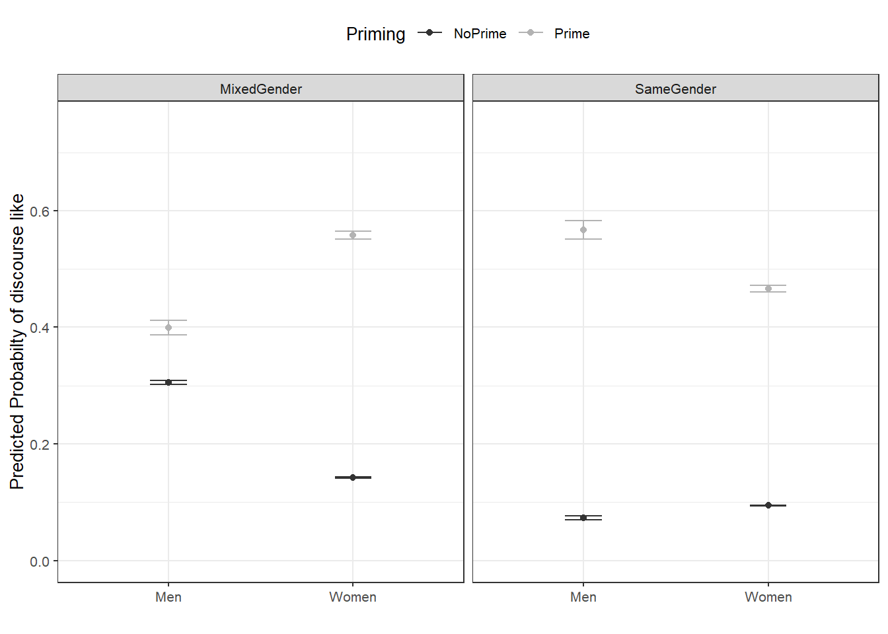
A proper visualization of the marginal effects can be extracted using the sjPlot package.
plot_model(m13.glmer, type = "pred", terms = c("ConversationType", "Priming", "Gender"))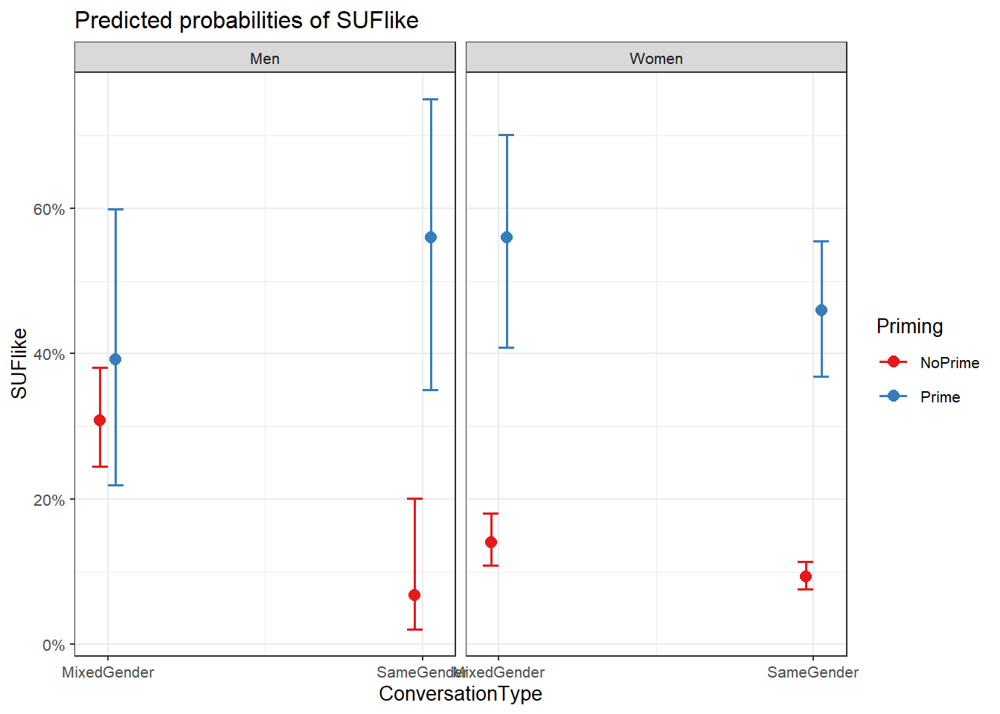
We can see that discourse like is more likely to surface in primed contexts but that in contrast to women and men in same-gender conversations as well as women in mixed-gender conversations, priming appears to affect the use of discourse like by men in mixed-gender conversations only very little.
3.7 Extracting Model Fit Parameters
We now extract model fit parameters (Baayen 2008, 281).
probs = 1/(1+exp(-fitted(mlr.glmer)))
probs = binomial()$linkinv(fitted(mlr.glmer))
somers2(probs, as.numeric(mblrdata$SUFlike))## C Dxy n Missing
## 0.7646 0.5293 2000.0000 0.0000The model fit parameters indicate a suboptimal fit. Both the C-value and Somers’s Dxy show poor fit between predicted and observed occurrences of SUFlike. If the C-value is 0.5, the predictions are random, while the predictions are perfect if the C-value is 1. C-values above 0.8 indicate real predictive capacity (Baayen 2008, 204). Somers’ Dxy is a value that represents a rank correlation between predicted probabilities and observed responses. Somers’ Dxy values range between 0, which indicates complete randomness, and 1, which indicates perfect prediction (Baayen 2008, 204). This a value of .2646 suggests that the model performs better than chance but not substantially so. We will now perform the model diagnostics.
3.8 Model Diagnostics
We begin the model diagnostics by generating a diagnostic that plots the fitted or predicted values against the residuals.
plot(mlr.glmer, pch = 20, col = "black", lty = "dotted")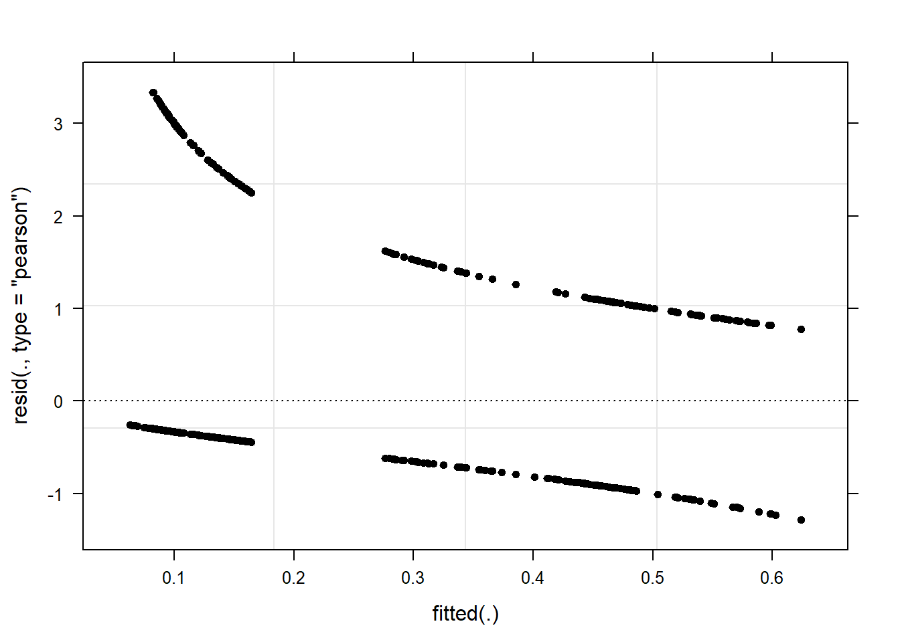
As a final step, we summarize our findings in tabulated form.
| SUFlike | |||
|---|---|---|---|
| Predictors | Odds Ratios | CI | p |
| (Intercept) | 0.45 | 0.32 – 0.61 | <0.001 |
| Priming [Prime] | 1.45 | 0.61 – 3.47 | 0.405 |
| Gender [Women] | 0.37 | 0.24 – 0.57 | <0.001 |
|
ConversationType [SameGender] |
0.16 | 0.05 – 0.59 | 0.006 |
|
Priming [Prime] * Gender [Women] |
5.37 | 1.78 – 16.16 | 0.003 |
|
Priming [Prime] * ConversationType [SameGender] |
12.02 | 2.15 – 66.99 | 0.005 |
|
Gender [Women] * ConversationType [SameGender] |
3.83 | 1.02 – 14.39 | 0.047 |
|
(Priming [Prime] * Gender [Women]) * ConversationType [SameGender] |
0.09 | 0.01 – 0.59 | 0.012 |
| Random Effects | |||
| σ2 | 3.29 | ||
| τ00 ID | 0.10 | ||
| ICC | 0.03 | ||
| N ID | 208 | ||
| Observations | 2000 | ||
| Marginal R2 / Conditional R2 | 0.144 / 0.169 | ||
A mixed-effect binomial logistic regression model which contained speaker as random effect was fit to the data in a step-wise-step up procedure. The final minimal adequate model performed significantly better than an intercept-only base line model (\(\chi\)2(8): 842.06, p <.0001) but has a suboptimal fit (C: 0.765, Somers’ Dxy: .529). The final minimal adequate model reported a significant interaction between the gender of speakers, the type of conversation and priming (\(\chi\)2(3): 9.66, p = .022). The model showed that discourse like is more likely to surface in primed contexts but that in contrast to women and men in same-gender conversations as well as women in mixed-gender conversations, priming appears to affect the use of discourse like by men in mixed-gender conversations only to a marginal extent.
4 (Quasi-)Poisson and Negative-Binomial Mixed-Effects Regression
Like fixed-effects Poisson models, mixed-effects Poisson models take counts as dependent variables. The data for this analysis was collected on three separate evenings (Trial). The number of the filler “uhm” (UHM) was counted in two-minute conversations that were either in English, German, Russian, or Mandarin (Language). In addition, the number of shots that speakers drank before they talked was recorded (Shots).
# load data
countdata <- read.table("https://slcladal.github.io/data/countdata.txt",
comment.char = "",quote = "", sep = "\t", header = T)
# inspect data
str(countdata)## 'data.frame': 500 obs. of 6 variables:
## $ ID : int 1 2 3 4 5 6 7 8 9 10 ...
## $ Trial : int 3 3 3 1 1 3 1 3 3 2 ...
## $ Language: chr "Russian" "Russian" "German" "German" ...
## $ Gender : chr "Man" "Man" "Man" "Man" ...
## $ UHM : int 0 0 0 0 2 1 1 0 0 0 ...
## $ Shots : int 0 0 5 3 6 5 1 4 0 2 ...Since the data contains character variables, we need to factorize the data before we can analyse it further and we also remove the ID column.
# factorize variables
countdata <- countdata %>%
dplyr::select(-ID)
clfct <- c("Trial", "Language", "Gender")
countdata[clfct] <- lapply(countdata[clfct], factor)
# inspect data
str(countdata); head(countdata)## 'data.frame': 500 obs. of 5 variables:
## $ Trial : Factor w/ 3 levels "1","2","3": 3 3 3 1 1 3 1 3 3 2 ...
## $ Language: Factor w/ 4 levels "English","German",..: 4 4 2 2 2 2 3 2 4 2 ...
## $ Gender : Factor w/ 2 levels "Man","Woman": 1 1 1 1 2 1 1 2 2 1 ...
## $ UHM : int 0 0 0 0 2 1 1 0 0 0 ...
## $ Shots : int 0 0 5 3 6 5 1 4 0 2 ...## Trial Language Gender UHM Shots
## 1 3 Russian Man 0 0
## 2 3 Russian Man 0 0
## 3 3 German Man 0 5
## 4 1 German Man 0 3
## 5 1 German Woman 2 6
## 6 3 German Man 1 5After the data is factorized, we can visualize the data.
countdata %>%
# prepare data
dplyr::select(Language, Shots) %>%
dplyr::group_by(Language) %>%
dplyr::mutate(Mean = round(mean(Shots), 1)) %>%
dplyr::mutate(SD = round(sd(Shots), 1)) %>%
# start plot
ggplot(aes(Language, Shots, color = Language, fill = Language)) +
geom_violin(trim=FALSE, color = "gray20")+
geom_boxplot(width=0.1, fill="white", color = "gray20") +
geom_text(aes(y=-4,label=paste("mean: ", Mean, sep = "")), size = 3, color = "black") +
geom_text(aes(y=-5,label=paste("SD: ", SD, sep = "")), size = 3, color = "black") +
scale_fill_manual(values=rep("grey90",4)) +
theme_set(theme_bw(base_size = 10)) +
theme(legend.position="none", legend.title = element_blank(),
panel.grid.major = element_blank(),
panel.grid.minor = element_blank()) +
ylim(-5, 15) +
labs(x = "Language", y = "Shots")
The violin plots show that the English speakers drank more shots than speakers of other languages with Mandarin speakers drinking the fewest shots.
In the present case, we will a Boruta variable selection procedure to streamline the model fitting process. Thus, before fitting the model, we will test which variables have any kind of relationship with the dependent variable and therefore deserve to be evaluated in the regression modelling. As this is just an example, we will only consider variables which are deemed important and disregard both unimportant and tentative variables. We start the Boruta analysis by setting a seed and running an initial Boruta analysis.
library(Boruta)
# perform variable selection
set.seed(20191220)
boruta <- Boruta(UHM ~.,data=countdata)
print(boruta)## Boruta performed 99 iterations in 5.105 secs.
## 1 attributes confirmed important: Shots;
## 1 attributes confirmed unimportant: Gender;
## 2 tentative attributes left: Language, Trial;As only Shots is confirmed as important, we will only check for the effect of Shots and include Language as a random effect in the regression modeling. Including Language as a random effect is probably not justified statistically (given that the Boruta analysis showed that it only has a tentative effect) but for theoretical reasons as the speakers are nested into Languages. Before we start with the modeling, however, we proceed by checking if the data does indeed approximate a Poisson distribution.
library(vcd)
# output the results
gf = goodfit(countdata$UHM,type= "poisson", method= "ML")
plot(gf,main="Count data vs Poisson distribution")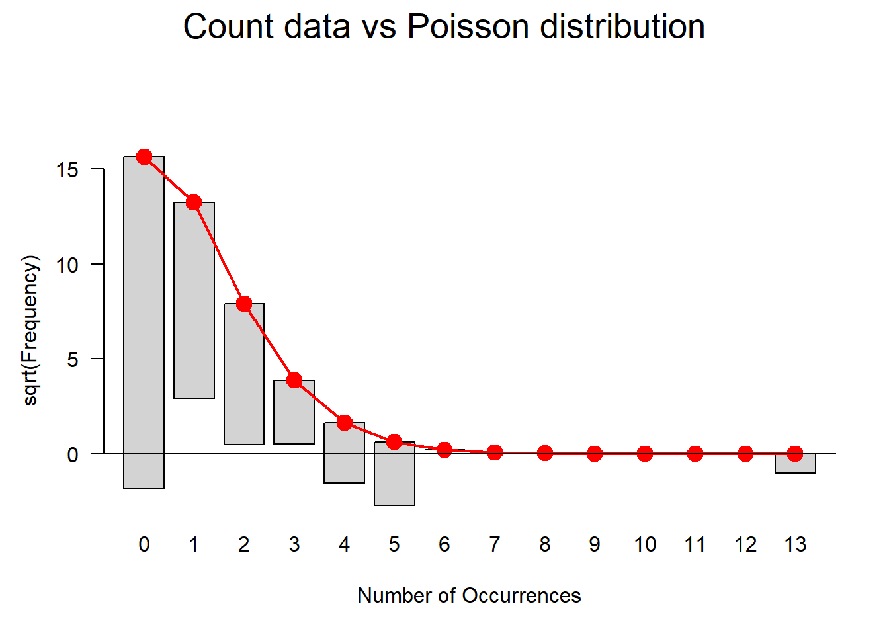
The data does not perfectly match a distribution that would be expected if the data approximated a Poisson distribution. We will use a goodness-of-fit test to check if the data does indeed diverge significantly from being Poisson distributed. If the p-values of the goodness-of-fit test is smaller than .05, then the distribution of the data differs significantly from a Poisson distribution and, given the visualization is likely over-dispersed.
In case of overdispersion, we may have to use a quasi-Poisson or, even better, a negative binomial model but we will, for now continue with the Poisson model and perform diagnostics later to check if we have to switch to a more robust method. One effect of overdispersion is that the standard errors of a model are biased and quasi-Poisson models scale the standard errors to compensate bias. However, Zuur, Hilbe, and Ieno (2013) suggest to use negative-binomial model instead. This is so because the scaling of the standard errors performed by quasi-Poisson models only affects the significance of coefficients (the p-values) but it does not affect the coefficients which, however, may be affected themselves by overdispersion. Thus, the coefficients of Poisson as well as quasi-Poisson models (which are identical) may be unreliable when dealing with overdispersion. Negative binomial models, in contrast, include an additional dispersion or heterogeneity parameter which accommodates overdispersion better than merely scaling the standard errors (see Zuur, Hilbe, and Ieno 2013, 21).
summary(gf)##
## Goodness-of-fit test for poisson distribution
##
## X^2 df P(> X^2)
## Likelihood Ratio 153.4 5 0.0000000000000000000000000000002493The p-value is indeed smaller than .05 which means that we should indeed use a negative-binomial model rather than a Poisson model. We will ignore this, for now, and proceed to fit a Poisson mixed-effects model and check what happens if a Poisson model is fit to over-dispersed data.
4.1 Mixed-Effects Poisson Regression
In a first step, we create mixed-effect intercept-only baseline models and then test if including “Shots” significantly improves model fit and, thus, has a significant impact on the number of uhms.
# base-line mixed-model
m0.glmer = glmer(UHM ~ 1 + (1 | Language), data = countdata, family = poisson,
control=glmerControl(optimizer="bobyqa"))
# add Shots
m1.glmer <- update(m0.glmer, .~.+ Shots)## boundary (singular) fit: see ?isSingularAnova(m1.glmer, test = "Chi") ## Analysis of Deviance Table (Type II Wald chisquare tests)
##
## Response: UHM
## Chisq Df Pr(>Chisq)
## Shots 321 1 <0.0000000000000002 ***
## ---
## Signif. codes: 0 '***' 0.001 '**' 0.01 '*' 0.05 '.' 0.1 ' ' 1The ANOVA confirms that Shots have a significant impact on the number of instances of uhm. However, we get the warning that the fitted mixed model is (almost / near) singular. In such cases, the model should not be reported. As this is only an example, we will continue by having a look at the model summary.
summary(m1.glmer)## Generalized linear mixed model fit by maximum likelihood (Laplace
## Approximation) [glmerMod]
## Family: poisson ( log )
## Formula: UHM ~ (1 | Language) + Shots
## Data: countdata
## Control: glmerControl(optimizer = "bobyqa")
##
## AIC BIC logLik deviance df.resid
## 1041.8 1054.5 -517.9 1035.8 497
##
## Scaled residuals:
## Min 1Q Median 3Q Max
## -1.510 -0.666 -0.593 0.586 4.339
##
## Random effects:
## Groups Name Variance Std.Dev.
## Language (Intercept) 0 0
## Number of obs: 500, groups: Language, 4
##
## Fixed effects:
## Estimate Std. Error z value Pr(>|z|)
## (Intercept) -1.2789 0.0893 -14.3 <0.0000000000000002 ***
## Shots 0.2336 0.0130 17.9 <0.0000000000000002 ***
## ---
## Signif. codes: 0 '***' 0.001 '**' 0.01 '*' 0.05 '.' 0.1 ' ' 1
##
## Correlation of Fixed Effects:
## (Intr)
## Shots -0.806
## convergence code: 0
## boundary (singular) fit: see ?isSingularThe model summary confirms that the number of shots does have a significantly positive effect on the number of occurrences of uhm. Furthermore, the scaled residuals are distributed very unevenly which suggests overdispersion. Including Language as a random effect is not justified given that they have 0 variance and a standard deviation of 0 (which means that Language does not account for or explain any additional variance).
We now check if the model suffers from overdispersion following (Zuur, Hilbe, and Ieno (2013) 138).
# extract pearson residuals
PearsonResiduals <- resid(m1.glmer, type = "pearson")
# extract number of cases in model
Cases <- nrow(countdata)
# extract number of predictors (plus intercept)
NumberOfPredictors <- length(fixef(m1.glmer)) +1
# calculate overdispersion
Overdispersion <- sum(PearsonResiduals^2) / (Cases-NumberOfPredictors)
# inspect overdispersion
Overdispersion## [1] 1.169The data is slightly over-dispersed. It would also be advisable to plot the Cook’s distance (which should not show data points with values > 1). If there are data points with high Cook’s D values, we could exclude them which would, very likely reduce the overdispersion (see Zuur, Hilbe, and Ieno 2013, 22). We ignore this, for now, and use diagnostic plots to check if the plots indicate problems.
diag_data <- data.frame(PearsonResiduals, fitted(m1.glmer))
colnames(diag_data) <- c("Pearson", "Fitted")
p9 <- ggplot(diag_data, aes(x = Fitted, y = Pearson)) +
geom_point() +
geom_hline(yintercept = 0, linetype = "dotted")
p10 <- ggplot(countdata, aes(x = Shots, y = diag_data$Pearson)) +
geom_point() +
geom_hline(yintercept = 0, linetype = "dotted") +
labs(y = "Pearson")
p11 <- ggplot(countdata, aes(x = Language, y = diag_data$Pearson)) +
geom_boxplot() +
labs(y = "Pearson") +
theme(axis.text.x = element_text(angle=90))
grid.arrange(p9, p10, p11, nrow = 1)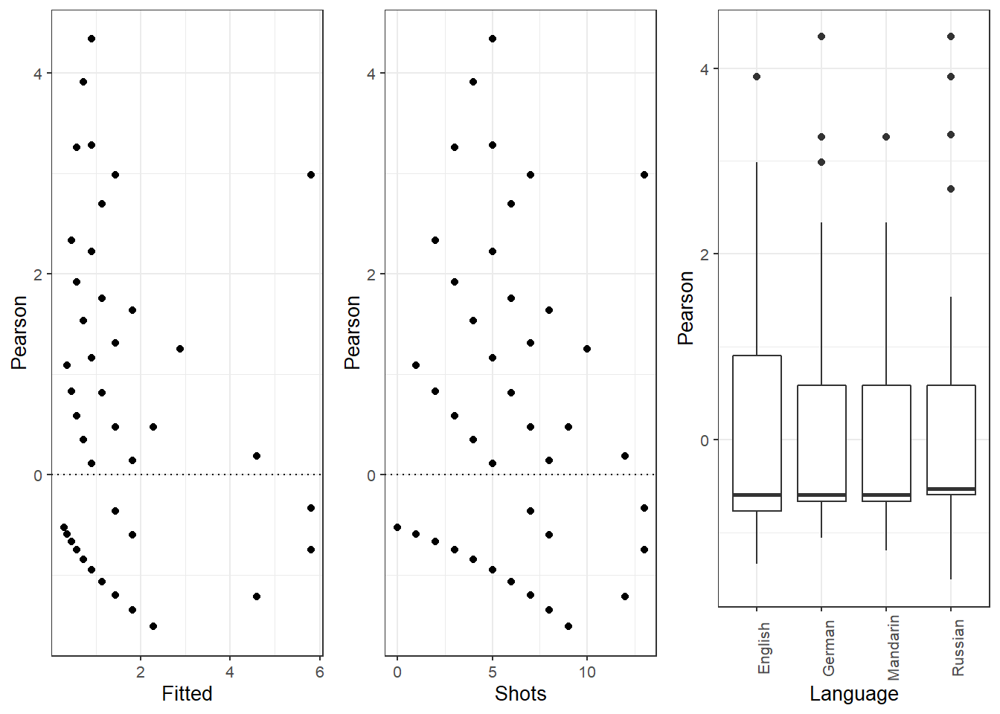
The diagnostic plots show problems as the dots in the first two plots are not random but show a pattern in the lower left corner. In addition, the variance of English (left boxplot) is notable larger than the variance of Russian (right boxplot). As a final step, we plot the predicted vales of the model to check if the predictions make sense.
plot_model(m1.glmer, type = "pred", terms = c("Shots"))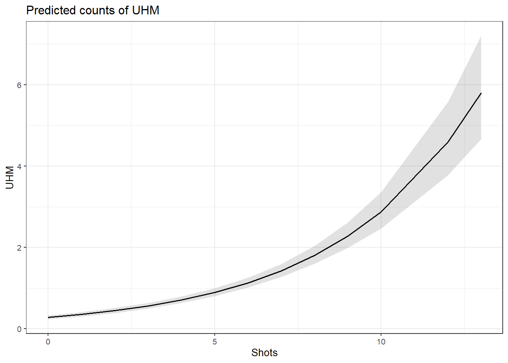
The model predicts that the instances of uhm increase with the number of shots. Note that the increase is not homogenous as the y-axis labels indicate!
The summary of the model can be extracted using the tab_model function from the sjPlot package.
tab_model(m1.glmer)| UHM | |||
|---|---|---|---|
| Predictors | Incidence Rate Ratios | CI | p |
| (Intercept) | 0.28 | 0.23 – 0.33 | <0.001 |
| Shots | 1.26 | 1.23 – 1.30 | <0.001 |
| Random Effects | |||
| σ2 | 0.89 | ||
| τ00 Language | 0.00 | ||
| N Language | 4 | ||
| Observations | 500 | ||
| Marginal R2 / Conditional R2 | 0.288 / NA | ||
The summary table shows that our model is indeed highly problematic (the conditional R2 could not be computed): this shows that our model suffers from a serious problem (near singular fit). If this were not just an example, you should not(!) report this model!
4.2 Quasi-Possion Mixed-Effects Regression
We will now turn to a quasi-Poisson model to see if scaling the standard errors has a positive effect. This can make sense as quasi-Poisson mixed-effects models handle over-dispersed data better than normal Poisson-models.
We begin the model fitting process by creating a mixed- and a fixed-effects intercept-only base-line model. Unfortunately, there is not yet a procedure in place for quasi-Poisson models to test if the inclusion of random effects is justified. However, here the Boruta also provides valuable information: Language was only considered tentative but not important which suggests that it will not explain variance which means that including Language as a random effect may not be justified. This would require further inspection. Because we are only dealing with an example here, we ignore this fact (which you should not do in proper analyses) and continue right away with adding shots.
library(MASS)##
## Attaching package: 'MASS'## The following object is masked from 'package:dplyr':
##
## select# base-line mixed-model
m0.glmer = glmmPQL(UHM ~ 1, random = ~ 1 | Language, data = countdata,
family = quasipoisson(link='log'))## iteration 1## iteration 2## iteration 3## iteration 4# add Shots
m1.glmer <- update(m0.glmer, .~.+ Shots)## iteration 1Anova(m1.glmer, test = "Chi") # SIG! (p<0.0000000000000002 ***)## Analysis of Deviance Table (Type II tests)
##
## Response: zz
## Chisq Df Pr(>Chisq)
## Shots 276 1 <0.0000000000000002 ***
## ---
## Signif. codes: 0 '***' 0.001 '**' 0.01 '*' 0.05 '.' 0.1 ' ' 1The ANOVA confirms that Shots have a significant impact on the number of instances of uhm. We will now have a look at the model summary.
summary(m1.glmer)## Linear mixed-effects model fit by maximum likelihood
## Data: countdata
## AIC BIC logLik
## NA NA NA
##
## Random effects:
## Formula: ~1 | Language
## (Intercept) Residual
## StdDev: 0.00004081 1.078
##
## Variance function:
## Structure: fixed weights
## Formula: ~invwt
## Fixed effects: UHM ~ Shots
## Value Std.Error DF t-value p-value
## (Intercept) -1.2789 0.09649 495 -13.26 0
## Shots 0.2336 0.01408 495 16.59 0
## Correlation:
## (Intr)
## Shots -0.806
##
## Standardized Within-Group Residuals:
## Min Q1 Med Q3 Max
## -1.4004 -0.6182 -0.5501 0.5437 4.0248
##
## Number of Observations: 500
## Number of Groups: 4The model summary does not provide AIC, BIC or logged likelihood values. The coefficient for “Shots” is highly significant (p <.001) and the data is notably over-dispersed (the Standardized Within-Group Residuals deviate substantially from a normal distribution with higher values having a thick tail). Also, in contrast to the Poisson model, Language does explain at least a minimal share of the variance now as the mean and standard deviation are no longer 0. Note also, that the coefficients are identical to the Poisson coefficients but the standard errors and p-values differ (the model provides t- rather than z-values).
In a next step, we will calculate the odds ratios of the coefficient (as we only have one). We will use the coefficients from the fixed-effects model as the coefficients for mixed- and fixed-effects models are identical (the random effect structure only affects the standard error and p-values but not the coefficients; you can check by uncommenting the summary command).
m1.glm = glm(UHM ~ Shots, data = countdata, family = quasipoisson(link='log'))
exp(coef(m1.glm))## (Intercept) Shots
## 0.2783 1.2632The standardized or \(\beta\)-coefficient tells us that the likelihood of uhm increases by 1.26 (or 26.32 percent) with each additional shot.
Before inspecting the relationship between Shots and uhm, we will check if the overdispersion was reduced.
# extract pearson residuals
PearsonResiduals <- resid(m1.glmer, type = "pearson")
# extract number of cases in model
Cases <- nrow(countdata)
# extract number of predictors (plus intercept)
NumberOfPredictors <- length(fixef(m1.glmer)) +1
# calculate overdispersion
Overdispersion <- sum(PearsonResiduals^2) / (Cases-NumberOfPredictors)
# inspect overdispersion
Overdispersion## [1] 1.006The overdispersion has indeed decreased and is not so close to 1 that overdispersion is no longer an issue.
We continue to diagnose the model by plotting the Pearson’s residuals against fitted values. This diagnostic plot should not show a funnel-like structure or patterning as we observed in the case of the Poisson model.
# diagnostic plot
plot(m1.glmer, pch = 20, col = "black", lty= "dotted", ylab = "Pearson's residuals")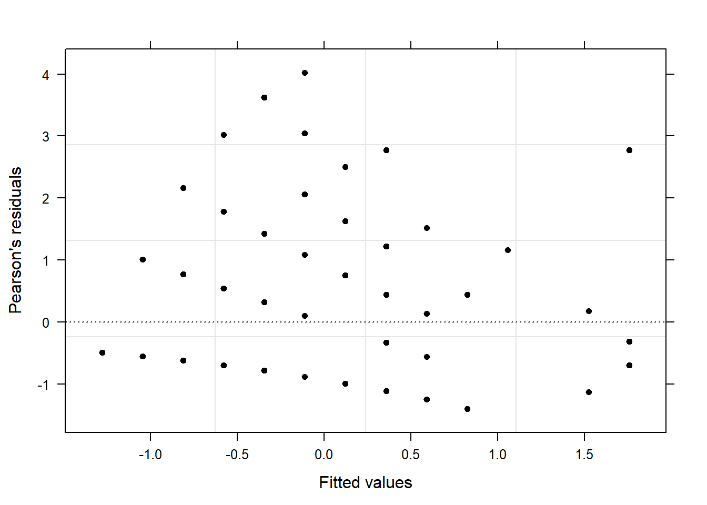
Indeed, the plot exhibits a (slight) funnel shape (but not drastically so) and thus indicates heteroscedasticity. However, the patterning that we observed with the Poisson model has disappeared. We continue by plotting the random effect adjustments.
# generate diagnostic plots
plot(m1.glmer, Language ~ resid(.), abline = 0, fill = "gray70") 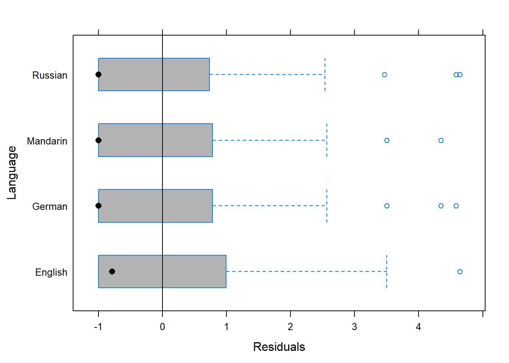
The adjustments by “Language” are marginal (which was somewhat expected given that Language was only deemed tentative), which shows that there is very little variation between the languages and that we have no statistical reason to include Language as a random effect.
In a final step, we plot the fixed-effect of “Shots” using the “predictorEffects” function from the “effects” package.
plot_model(m1.glmer, type = "pred", terms = c("Shots"))
The effects plot shows that the number of uhms increases near-linearly with the number of shots a speaker has had. However, the predictions do not make sense: note that the model predicts negative values for up to 5 shots. this does not make sense and we have to abandon the quasi-Poisson model despite it showing improvements compared to the Poisson model (some adjustments by Language and less patterning in the diagnostic plots).
Finally, we extract the summary table of this model.
tab_model(m1.glmer)| UHM | |||
|---|---|---|---|
| Predictors | Incidence Rate Ratios | CI | p |
| (Intercept) | 0.28 | 0.23 – 0.34 | <0.001 |
| Shots | 1.26 | 1.23 – 1.30 | <0.001 |
| N Language | 4 | ||
| Observations | 500 | ||
4.3 Negative Binomial Mixed-Effects Model
In a first step, we create fixed- and mixed-effects intercept-only baseline models and then test if including “Shots” significantly improves model fit and, thus, has a significant impact on the number of uhms.
# base-line mixed-model
m0.glmer = glmer.nb(UHM ~ 1 + (1 | Language), data = countdata)
# add Shots
m1.glmer <- update(m0.glmer, .~.+ Shots)
Anova(m1.glmer, test = "Chi") ## Analysis of Deviance Table (Type II Wald chisquare tests)
##
## Response: UHM
## Chisq Df Pr(>Chisq)
## Shots 83 1 <0.0000000000000002 ***
## ---
## Signif. codes: 0 '***' 0.001 '**' 0.01 '*' 0.05 '.' 0.1 ' ' 1The negative-binomial model also reports a significant impact of shots on the number of uhms. We will now inspect the summary.
# inspect model
summary(m1.glmer) ## Generalized linear mixed model fit by maximum likelihood (Laplace
## Approximation) [glmerMod]
## Family: Negative Binomial(0.7478) ( log )
## Formula: UHM ~ (1 | Language) + Shots
## Data: countdata
##
## AIC BIC logLik deviance df.resid
## 1051.6 1068.5 -521.8 1043.6 496
##
## Scaled residuals:
## Min 1Q Median 3Q Max
## -0.770 -0.514 -0.468 0.476 2.781
##
## Random effects:
## Groups Name Variance Std.Dev.
## Language (Intercept) 0.00000000000000000425 0.00000000206
## Number of obs: 500, groups: Language, 4
##
## Fixed effects:
## Estimate Std. Error z value Pr(>|z|)
## (Intercept) -1.4495 0.1383 -10.48 <0.0000000000000002 ***
## Shots 0.2782 0.0305 9.11 <0.0000000000000002 ***
## ---
## Signif. codes: 0 '***' 0.001 '**' 0.01 '*' 0.05 '.' 0.1 ' ' 1
##
## Correlation of Fixed Effects:
## (Intr)
## Shots -0.816
## convergence code: 0
## boundary (singular) fit: see ?isSingularIn a next step, we calculate the overdispersion.
# extract pearson residuals
PearsonResiduals <- resid(m1.glmer, type = "pearson")
# extract number of betas + predictors + sigma
NumberOfPredictors <- 2+1+1
# extract number of cases in model
Cases <- nrow(countdata)
# caluculate overdispersion parameter
Overdispersion <- sum(PearsonResiduals^2) / (Cases / NumberOfPredictors)# show overdispersion parameter
Overdispersion## [1] 2.469The overdispersion has increased in this case. We will use diagnostic plots to check for problems.
diag_data <- data.frame(PearsonResiduals, fitted(m1.glmer))
colnames(diag_data) <- c("Pearson", "Fitted")
p9 <- ggplot(diag_data, aes(x = Fitted, y = Pearson)) +
geom_point() +
geom_hline(yintercept = 0, linetype = "dotted")
p10 <- ggplot(countdata, aes(x = Shots, y = diag_data$Pearson)) +
geom_point() +
geom_hline(yintercept = 0, linetype = "dotted") +
labs(y = "Pearson")
p11 <- ggplot(countdata, aes(x = Language, y = diag_data$Pearson)) +
geom_boxplot() +
labs(y = "Pearson") +
theme(axis.text.x = element_text(angle=90))
grid.arrange(p9, p10, p11, nrow = 1)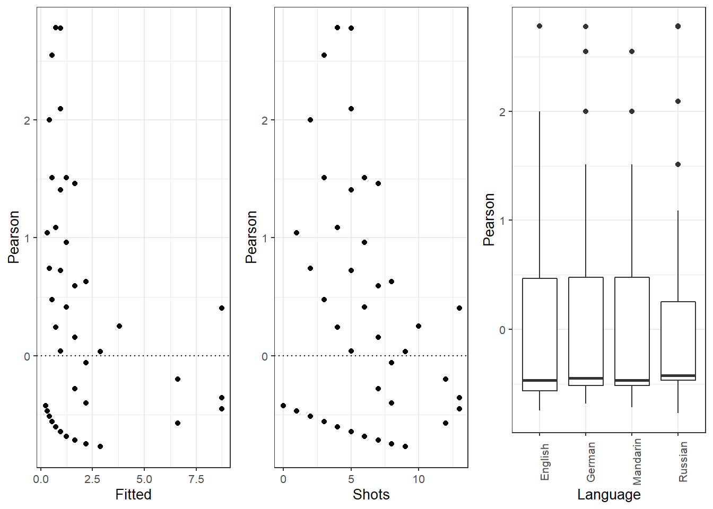
The diagnostics show patterning similar to the one we saw with the Poisson model which suggest that the negative binomial model is also not an optimal model for our data. We continue by plotting the predicted values and, subsequently, summarize the analysis.
plot_model(m1.glmer, type = "pred", terms = c("Shots"))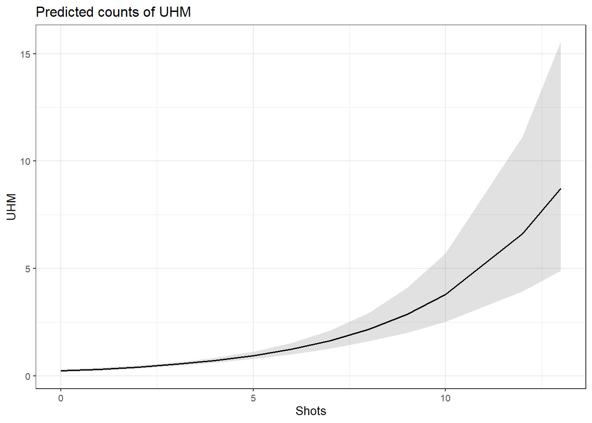
And, we extract the summary table of this model.
tab_model(m1.glmer)| UHM | |||
|---|---|---|---|
| Predictors | Incidence Rate Ratios | CI | p |
| (Intercept) | 0.23 | 0.18 – 0.31 | <0.001 |
| Shots | 1.32 | 1.24 – 1.40 | <0.001 |
| Random Effects | |||
| σ2 | 1.33 | ||
| τ00 Language | 0.00 | ||
| N Language | 4 | ||
| Observations | 500 | ||
| Marginal R2 / Conditional R2 | 0.277 / NA | ||
The effect plot shows that the predicted number of shots increases linearly with each shot. For nine and more shots, the model substantially overestimates the number of uhms which shows a bad model fit. It should be noted though that the observed number of uhms also becomes somewhat volatile and shows fluctuations after eight shots. We will now summarize the results as if the violations had NOT occurred(!) - again: this is only because we are practicing here - this would be absolutely unacceptable in a proper write-up of an analysis!
A mixed-effect negative binomial regression model which contained the language in which the conversation took place as random effect was fit to the data. Prior to the regression modelling, a Boruta analysis was applied to determine whether any of the predictors had a meaningful relationship with the dependent variable (instances of uhm). Since the Boruta analysis indicated that only the number of shots a speaker had was important, only “Shots” was tested during model fitting. The final minimal adequate model showed that the number of uhm as fillers increases significantly, and near-linearly with the number of shots speakers had (\(\chi\)2(1):83.0, p <.0001, \(\beta\): 0.2782). An inspection of the random effect structure conveyed that there was almost no variability between languages and language did not contribute meaningfully to the model fit.
References
Austin, Peter C., and George Leckie. 2018. “The Effect of Number of Clusters and Cluster Size on Statistical Power and Type I Error Rates When Testing Random Effects Variance Components in Multilevel Linear and Logistic Regression Models.” Journal of Statistical Computation and Simulation 88 (16): 3151–63.
Baayen, R Harald. 2008. Analyzing Linguistic Data. A Practical Introduction to Statistics Using R. Cambridge: Cambridge University press.
Bell, Bethany A., John M. Ferron, and Jeffrey D. Kromrey. 2008. “Cluster Size in Multilevel Models: The Impact of Sparse Data Structures on Point and Interval Estimates in Two-Level Models.” In JSM Proceedings. Section on Survey Research Methods, 1122–9. American Statistical Association Alexandria, VA.
Booth GD, Schuster EG, Niccolucci MJ. 1994. “Identifying Proxy Sets in Multiple Linear Regression: An Aid to Better Coefficient Interpretation. Research Paper Int-470.”
Clarke, Philippa. 2008. “When Can Group Level Clustering Be Ignored? Multilevel Models Versus Single-Level Models with Sparse Data.” Journal of Epidemiology & Community Health 62 (8): 752–58.
Clarke, Philippa, and Blair Wheaton. 2007. “Addressing Data Sparseness in Contextual Population Research: Using Cluster Analysis to Create Synthetic Neighborhoods.” Sociological Methods & Research 35 (3): 311–51.
Field, Andy, Jeremy Miles, and Zoe Field. 2012. Discovering Statistics Using R. Sage.
Johnson, Daniel Ezra. 2009. “Getting Off the Goldvarb Standard: Introducing Rbrul for Mixed-Effects Variable Rule Analysis.” Language and Linguistics Compass 3 (1): 359–83.
Maas, Cora JM, and Joop J Hox. 2005. “Sufficient Sample Sizes for Multilevel Modeling.” Methodology 1 (3): 86–92.
Neter, J., W. Wasserman, and MH Kutner. 1990. Applied Linear Statistical Models. Regression, Analysis of Variance, and Experimental Design. Irwin, Homewood, USA.
Pinheiro, J. C., and D. M. Bates. 2000. Mixed-Effects Models in S and S-Plus. Statistics and Computing. New York: Springer.
Twisk, J. W. R. 2006. Applied Multilevel Analysis: A Practical Guide. Cambridge: Cambridge University Press.
Zuur, AF, JM Hilbe, and EN Ieno. 2013. A Beginner S Guide to Glm and Glmm with R. Newburgh: Highland Statistics Ltd.
Zuur, Alain F., Elena N. Ieno, and Chris S. Elphick. 2010. “A Protocol for Data Exploration to Avoid Common Statistical Problems.” Methods in Ecology and Evolution 1 (1): 3–14.
Zuur, Alain F., Elena N. ·Ieno, Anatoly A. · Walker Neil J. and· Saveliev, and Graham M. · Smith. 2009. Mixed Effects Models and Extensions in Ecology with R. Springer.